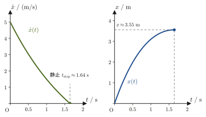
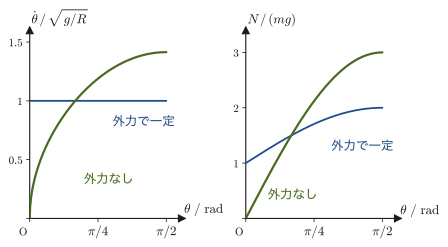

第43章ラグランジュの運動方程式 — 一般化座標と一般化力
ここまで，運動を，力 $\bm F$ を主人公にして記述してきた．ニュートンの運動方程式 $m\ddot{\bm r}=\bm F$ に，実際に働く力（重力，ばねの復元力，摩擦力，垂直抗力，張力，クーロン力……）を代入し，成分ごとに（多くの場合デカルト座標 $x,y,z$ で）微分方程式を立てて解く——これが，これまでの一貫したやり方だった．しかし，このやり方には実務上の悩みがある．単振り子を考えてみよう．おもりは糸に引かれて，長さ $\ell$ の円周上しか動けない．デカルト座標 $(x,y)$ でニュートンの運動方程式を立てると，そこには「糸の張力」という，大きさも向きも運動の途中でどんどん変わる，しかも最終的な答え（おもりの角度の時間変化）には現れてほしくない量が，計算の途中に必ず登場してしまう．おもりの位置は，本当は角度 $\theta$ という1つの数だけで完全に決まっているのに，である．
第VI部「解析力学」で学ぶのは，こうした悩みを回避する，ニュートン力学の書き換えである．中心的なアイディアは次の3つに集約できる．
- 座標によらない形：運動を表すのに，必ずしも $x,y,z$ を使う必要はない．おもりの位置を過不足なく指定できる数（角度，弧長，2物体間の距離……）を好きに選んでよく，しかもその選び方によらず，同じ形の運動方程式（本章で導くラグランジュの運動方程式）が成り立つ．束縛力（張力・垂直抗力など，束縛条件を保つためだけに働く，大きさが未知の力）は，束縛がなめらかな（理想的な）場合には，最初から計算に出てこない（なぜ出てこないのかは43.6節で確かめる）．
- 保存則と対称性：この書き換えのもとでは，「なぜエネルギーや運動量や角運動量が保存するのか」という問いに，統一的で美しい答えが与えられる．それは，物理法則が時間・空間の並進や回転に対して対称（不変）であることの直接の帰結である（第46章のネーターの定理）．高校物理で個別に暗記した保存則たちが，実は1つの原理から出てくることが見えてくる．
- 量子力学・統計力学への道：本章のラグランジアン $L$，第45章のハミルトニアン $H$，第46章のポアソン括弧は，そのまま量子力学の枠組み（シュレーディンガー方程式，交換関係）や統計力学の枠組み（分配関数，位相空間上の分布）の土台になる．解析力学は，19世紀までの力学の到達点であると同時に，20世紀の物理学への入り口でもある（本教材では，統計力学を第VII部で，特殊相対性理論を第VIII部で扱う．量子力学は別の教材の主題である）．
本章では，その第一歩として，束縛条件を陽に扱わずに済む「一般化座標」という考え方を導入し，ニュートンの運動方程式から出発して，一般化座標で書いた運動方程式——ラグランジュの運動方程式——を，一行も飛ばさずに導く．なお，本教材では第VI部を通じて，ラグランジアンを
$$ L \equiv T-U \qquad (T:\text{運動エネルギー},\ U:\text{位置エネルギー}) $$と定義する（$T$ から $U$ を引く順序であることに注意．なぜこの順序なのかは，43.4節の定義43.6のあとで説明する）．
- 自由度・ホロノミックな拘束条件・一般化座標という言葉の意味と，それらを使う理由
- 一般化運動量 $p_i=\pdiff{T}{\dot q_i}=\pdiff{L}{\dot q_i}$ の定義と，デカルト座標の運動量との関係
- 一般化力 $Q_i=\sum_j F_j\pdiff{x_j}{q_i}$ の定義と，その単位が座標の選び方によって変わること
- ニュートンの運動方程式だけから，ラグランジュの運動方程式 $\diff{}{t}\!\left(\pdiff{L}{\dot q_i}\right)-\pdiff{L}{q_i}=0$（保存力の場合）および $=Q_i'$（非保存力を含む場合）を導く手順
- ダランベールの原理・仮想仕事の原理という，同じ結論に至るもう1つの歴史的な道すじ
- 1次元の直線運動（摩擦・空気抵抗あり）と2次元の回転運動（お椀形の面上の運動）という2つの具体例に，導いた方程式を適用する方法
もとにしたノート：望月泰英『物理学ノート 解析力学』 pp. 1–5．
43.1 自由度と一般化座標 — なぜ座標を取り替えるのか
記号の復習：この章で使う記号
- $\dot x$（エックス・ドット）は $x$ の時間微分 $\dd x/\dd t$（速度），$\ddot x$（エックス・ツー・ドット）は $\dd^2x/\dd t^2$（加速度）．同様に，座標 $q_i$ の時間微分 $\dot q_i=\dd q_i/\dd t$（キュー・アイ・ドット）を一般化速度（generalized velocity）という．
- $\pdiff{f}{x}$（パーシャル $f$，パーシャル $x$）は偏微分で，$f$ が複数の変数の関数のとき，他の変数を止めて $x$ だけで微分したもの（大学数学 第6章 6.2節）．
- $\equiv$ は「左辺を右辺で定義する」という意味の等号．
- $\displaystyle\sum_{j=1}^{n}a_j$（シグマ）は $a_1+a_2+\cdots+a_n$ の略記．下に書いた $j=1$ が始め，上に書いた $n$ が終わりの番号である．
- 「$q_i$ に共役（きょうやく，conjugate）な」は，$q_i$ と対（ペア）になっている，という意味．たとえば一般化力 $Q_i$ は，仕事が $\dd W=\sum_iQ_i\,\dd q_i$ と書けるときの $\dd q_i$ の係数であり，一般化運動量 $p_i$ は，$p_i\dot q_i$ がエネルギーの次元をもつ，$q_i$ の相棒である（第45章のハミルトン形式で，この「対」の関係が主役になる）．
単振り子（図43.1）を例に考えよう．支点を原点とし，鉛直下向きに $y$ 軸，水平右向きに $x$ 軸をとる．おもりの位置は $(x,y)$ の2つの数で指定できる．しかし，おもりは長さ $\ell$ の糸で支点とつながれているので，実際には
$$ x^2+y^2=\ell^2 $$という関係（拘束条件，constraint）を常に満たしていなければならない．つまり，$(x,y)$ の2つの数は独立ではなく，一方が決まれば他方はこの式からほぼ決まってしまう（符号の分だけ曖昧さが残るが，おもりが同じ側にあり続けるとすれば，実質的に独立な情報は1つだけである）．実際，おもりの位置は，鉛直線から測った角度 $\theta$ という，たった1つの数で過不足なく指定できる：$x=\ell\sin\theta,\ y=\ell\cos\theta$．この $\theta$ を使えば，拘束条件 $x^2+y^2=\ell^2$ は自動的に満たされ，もう気にする必要がない．
この「実質的に独立な情報の個数」を自由度（degree of freedom，DOF）と呼び，その個数分だけ選んだ，位置を過不足なく指定できる変数の組を一般化座標（generalized coordinates）と呼ぶ．単振り子の自由度は1であり，$\theta$ はその一般化座標の一例である（$\theta$ の代わりに弧長 $s=\ell\theta$ を使ってもよい．一般化座標の選び方は一意ではない）．
定義43.1 自由度
$N$ 個の質点からなる系の位置は，一般には $3N$ 個のデカルト座標（各質点につき $x,y,z$）で指定できる．これらの座標のあいだに，運動の途中つねに成り立つ独立な関係式（拘束条件）が $k$ 個あるとき，独立に動かせる座標の個数
$$ f=3N-k $$を，この系の自由度（degree of freedom，DOF）という．自由度 $f$ は，系の配置（コンフィギュレーション）を過不足なく指定するのに必要な変数の個数である．（次節以降では，デカルト座標の個数 $3N$ を $n$ と書く．自由度 $f$ とデカルト座標の個数 $n$ は，拘束条件がなければ一致する．）
定義43.2 ホロノミックな拘束条件
拘束条件が，座標と時刻 $t$ だけの関係式
$$ h_a(x_1,x_2,\ldots,x_{3N},t)=0\qquad(a=1,2,\ldots,k) $$の形に書ける（速度 $\dot x_j$ を本質的に含まない）とき，その拘束条件をホロノミック（holonomic，可積分）であるという（自由度 $f=3N-k$ の記号 $f$ と紛らわしいので，拘束条件を表す関数は $h_a$ と書く）．単振り子の $x^2+y^2-\ell^2=0$ や，本章で扱うすべての拘束条件はホロノミックである．拘束条件が時刻 $t$ を陽に含まない（$h_a(x_1,\ldots,x_{3N})=0$）場合をスクレロノミック（scleronomic，束縛が時間的に固定されている），$t$ を陽に含む場合をレオノミック（rheonomic，束縛自体が動く）ということもある．
注意：ホロノミックでない拘束条件もある
速度をどうしても含んでしまい，座標だけの関係式に積分できない拘束条件を非ホロノミック（non-holonomic）と呼ぶ（例：水平面上を滑らずに転がる円板（硬貨）．円板の位置と向きを自由に変えられるとき，「接触点の速度が0」という条件は速度を含んでおり，座標だけの関係式には積分できない．これに対して，まっすぐな線の上だけを転がる円板は，座標の関係式で書けるのでホロノミックである）．非ホロノミックな系は，これから導くラグランジュの運動方程式をそのままの形では使えず，特別な扱いが必要になる．本教材で扱う拘束条件はすべてホロノミックである．
定義43.3 一般化座標
自由度 $f$ の系に対して，配置を過不足なく指定できる $f$ 個の独立な変数 $q_1,q_2,\ldots,q_f$ を一般化座標（generalized coordinates）と呼ぶ．一般化座標は長さの次元をもつ必要はなく，角度（単振り子の $\theta$）・面積・比率など，配置を指定できるものなら何でもよい．一般化座標の選び方は一通りではないが，いったん選べば，デカルト座標 $x_1,\ldots,x_{3N}$ は一般化座標の関数として
$$ x_j=x_j(q_1,q_2,\ldots,q_f,t)\qquad(j=1,2,\ldots,3N) $$と表せる．拘束条件がスクレロノミック（$t$ を陽に含まない）であれば，$t$ を陽に含まない $x_j=x_j(q_1,\ldots,q_f)$ という形にとれる．
イメージ：一般化座標を使うと何がうれしいのか
デカルト座標 $(x,y)$ のままニュートンの運動方程式を立てると，おもりを円周上に留めている「糸の張力」という，大きさが運動の途中で刻々と変わる未知の力を，$x$ 方向・$y$ 方向それぞれの式に必ず書き込まなければならない．最終的に知りたいのは張力の値ではなく，おもりの揺れ方（$\theta(t)$）だけなのに，である．これに対して，最初から拘束条件を満たす一般化座標 $\theta$ を使えば，張力（拘束条件を保つためだけに働く力）は計算のどこにも現れない（なぜ現れないのかというと，張力は，$\theta$ を変えたときのおもりの動き——円の接線方向——と常に垂直で，仕事をしないからである．この事情は43.6節で確かめる）．一般化座標を使う最大の利点は，まさにこの「厄介な拘束力を考慮しなくてよい」という点にある．本章でこれから導くラグランジュの運動方程式は，この利点をどんな一般化座標の選び方に対しても保証してくれる枠組みである．
例題43.1 斜面を滑る物体の自由度
水平面に対して角度 $\alpha$ だけ傾いた，なめらかな斜面がある．鉛直面内に $x$ 軸（水平右向き）・$y$ 軸（鉛直上向き）をとり，斜面の最下点を原点とする．質量 $m$ の物体が，斜面から離れずに（斜面に沿ってだけ）動くとき，(1) この系の自由度はいくつか．(2) 斜面に沿って測った，原点からの距離を $s$ として，デカルト座標 $(x,y)$ を $s$ の関数として表せ．
解答 (1) 物体は鉛直面内を動くので，デカルト座標は $(x,y)$ の2個である．「斜面から離れない」という条件は，物体が直線 $y=x\tan\alpha$ の上にあることを意味し，これは時刻 $t$ を陽に含まないホロノミックな拘束条件が1個ある場合である．したがって，自由度は
$$ f=2-1=1 $$である．(2) 自由度が1なので，一般化座標は1個でよい．斜面に沿った距離 $s$ を一般化座標に選ぶと，斜面の傾き角が $\alpha$ であることから，
$$ x=s\cos\alpha,\qquad y=s\sin\alpha $$と表せる．実際にこれを拘束条件に代入すると $y=x\tan\alpha$ すなわち $s\sin\alpha=(s\cos\alpha)\tan\alpha=s\sin\alpha$ となり，$s$ の値によらず恒等的に満たされている——つまり，$s$ を使って表した時点で，拘束条件はもう気にする必要がなくなっている．これが，一般化座標を選ぶことの意味である．
例題43.2 棒でつながれた2つの質点の自由度
質量 $m_1,\,m_2$ の2つの質点が，長さ $d$ の軽くて曲がらない棒でつながれ，3次元空間を自由に動く（二原子分子の剛体モデル）．(1) 自由度 $f$ はいくつか．(2) 一般化座標の選び方を1つ挙げ，2つの質点のデカルト座標をその一般化座標で表せ．
解答 (1) 質点は $N=2$ 個なので，デカルト座標は $3N=6$ 個（各質点の $x,y,z$）である．棒があるので，2つの質点の間の距離は常に $d$ であり，質点1，2の位置ベクトルを $\bm r_1,\bm r_2$ として
$$ \abs{\bm r_2-\bm r_1}^2-d^2=0 $$という関係が運動の途中つねに成り立つ．これは座標だけの関係式であり，時刻 $t$ も速度も含まないので，ホロノミックな拘束条件（定義43.2）が $k=1$ 個ある場合である．よって自由度は
$$ f=3N-k=6-1=5 $$である．(2) 全質量を $M=m_1+m_2$ として，重心の位置 $\bm R=(X,Y,Z)$（3個）と，質点1から質点2へ向かう向きを表す単位ベクトル
$$ \bm n=(\sin\theta\cos\varphi,\ \sin\theta\sin\varphi,\ \cos\theta) $$の2つの角 $\theta,\varphi$（2個，球座標の角度と同じ意味．図43.3）を一般化座標に選ぶ．計5個で，$f=5$ と一致する．このとき
$$ \bm r_1=\bm R-\frac{m_2}{M}\,d\,\bm n,\qquad \bm r_2=\bm R+\frac{m_1}{M}\,d\,\bm n $$と書ける．確かめておこう．まず $\bm r_2-\bm r_1=\left(\dfrac{m_1}{M}+\dfrac{m_2}{M}\right)d\,\bm n=d\,\bm n$ であり，$\abs{\bm n}=1$ なので $\abs{\bm r_2-\bm r_1}=d$ が（$\theta,\varphi$ や $\bm R$ がどんな値でも）恒等的に成り立つ．つまり拘束条件は，一般化座標を使ったとたんに自動的に満たされ，もう気にする必要がない．また重心は $\dfrac{m_1\bm r_1+m_2\bm r_2}{M}=\bm R+\dfrac{-m_1m_2+m_2m_1}{M^2}\,d\,\bm n=\bm R$ となり，確かに $\bm R$ が重心である．5個の自由度は，並進3個と回転2個（棒の向き）の内訳になっている．
（気体分子運動論では，二原子分子の運動エネルギーが，この並進3個と回転2個の自由度それぞれに $\tfrac12k_{\mathrm B}T$ ずつ分配されると考える．第24章 24.3節の「自由度5」は，ここで数えた自由度である．棒の長さを変える「振動」の自由度は，剛体モデルでは拘束条件によって消えている．）
応用：材料科学でも，一般化座標と拘束条件は日常的に使われる
分子や結晶の計算では，原子ごとのデカルト座標 $3N$ 個をそのまま使うより，結合の長さ・結合角・二面角のような内部座標を一般化座標に選ぶほうが，物理が見えやすいことが多い．たとえば水分子（$N=3$，デカルト座標は9個）から，分子全体の並進3個と回転3個を除くと，内部の自由度は $9-6=3$（2本の O–H 結合長と H–O–H 結合角）である．分子動力学（molecular dynamics）シミュレーションでは，振動がとくに速い O–H 結合の長さを固定して（ホロノミックな拘束条件を課して）計算の時間刻みを大きくとるために，SHAKE 法などの拘束アルゴリズムが使われる．また，結晶の格子振動では，原子ごとの変位を，互いに独立な調和振動（基準振動）の重ね合わせに書き直すと，各基準振動の振幅（基準座標）が一般化座標として働き，全エネルギーが基準座標ごとの和に分かれる．どちらも，「座標は $x,y,z$ でなくてもよい」という本章の考え方の実例である．
単振り子や斜面の物体のように，「拘束条件を満たすように一般化座標をあらかじめ選んでおき，デカルト座標をその関数として表す」というやり方が基本である．次の43.2節では，この考え方をより一般の（$N$ 個の質点からなる）系に広げ，デカルト座標と一般化座標の対応 $x_j=x_j(q_1,\ldots,q_f)$ から出発して，運動エネルギーを一般化座標で書き直すところから始める．なお，43.7.2項の例では，あえて自由度ちょうどの個数まで座標を減らさずに，束縛力（垂直抗力）をわざと計算に残す——という，一般化座標のもう1つの使い方も見ることになる．
次節から，ニュートンの運動方程式だけを出発点にして，ラグランジュの運動方程式を導いていく．全体の道すじを図43.2にまとめておく．途中で迷ったら，この図に戻って「いま，どの段階を進んでいるのか」を確かめるとよい．
43.2 一般化運動量
先に具体例：極座標にすると，運動量が角運動量に変わる
一般の式に入る前に，質量 $m$ の質点1個が $xy$ 平面を動く，いちばん簡単な場合で，これから作る量の正体を見ておこう．デカルト座標 $(x,y)$ では運動エネルギーは $T=\tfrac12m(\dot x^2+\dot y^2)$ で，これを速度で偏微分すると $\partial T/\partial\dot x=m\dot x$，$\partial T/\partial\dot y=m\dot y$，つまり見慣れた運動量 $mv$ になる．ところが平面極座標 $(r,\theta)$ で書くと $T=\tfrac12m(\dot r^2+r^2\dot\theta^2)$（例題43.3で確かめる）で，$\partial T/\partial\dot r=m\dot r$ は動径方向の運動量だが，$\partial T/\partial\dot\theta=mr^2\dot\theta$ は質量×速度の形をしておらず，角運動量である．「運動エネルギーを速度で偏微分する」という同じ操作が，座標の選び方しだいで運動量にも角運動量にもなる．この操作を，どんな座標にも通用する形で定義したものが，これから導入する一般化運動量である．以下の一般的な議論では，折にふれて「極座標なら……」と対応させる．
単振り子では自由度が1で話が簡単だったが，一般には $N$ 個の質点からなる系を考える．各質点の位置はデカルト座標 $(x,y,z)$ の3つの数で決まるので，全体では $3N$ 個の数が必要である．以下では，これらを一列に並べて $\alpha_1,\alpha_2,\ldots,\alpha_{3N}$ と名づける（質点1の $x,y,z$ 座標を $\alpha_1,\alpha_2,\alpha_3$，質点2の $x,y,z$ 座標を $\alpha_4,\alpha_5,\alpha_6$，……という具合である）．$\alpha_j$ にはそれぞれ質量 $m_j$ が対応する（質点1に対応する $\alpha_1,\alpha_2,\alpha_3$ にはすべて質点1の質量が対応する，等）．このとき，系全体の運動エネルギーは，各質点の運動エネルギー $\tfrac12 m\,(\dot x^2+\dot y^2+\dot z^2)$ を全質点について足し合わせたものであり，
\begin{equation} T=\frac12\sum_{j=1}^{3N}m_j\dot\alpha_j^{\,2} \label{eq:43-T-cartesian} \end{equation}と書ける．以下，$n\equiv 3N$ とおく（$n$ は単にデカルト座標の個数であり，自由度 $f=3N-k$（43.1節）とは限らないことに注意．拘束条件がなければ $k=0$ なので $f=3N=n$ と一致する）．式 \eqref{eq:43-T-cartesian} は，添字の範囲を書き換えれば
$$ T(\alpha_1,\alpha_2,\ldots,\alpha_n)=\frac12\sum_{j=1}^{n}m_j\dot\alpha_j^{\,2} $$とも書ける．
ここで，一般化座標 $q_1,q_2,\ldots,q_n$（43.1節）を導入し，デカルト座標 $\alpha_j$ を一般化座標の関数として
$$ \begin{cases} \alpha_1=\alpha_1(q_1,q_2,\ldots,q_n)\\ \alpha_2=\alpha_2(q_1,q_2,\ldots,q_n)\\ \quad\vdots\\ \alpha_n=\alpha_n(q_1,q_2,\ldots,q_n) \end{cases} \qquad\text{すなわち}\qquad \alpha_j(\{q_i\})\quad(j=1,2,\ldots,n) $$と表す（$\{q_i\}$ は $q_1,\ldots,q_n$ をまとめて表す略記）．以下では，一般化座標の個数がデカルト座標の個数と同じ $n$ 個である場合（拘束条件がなく，座標変換だけの場合）を考える．拘束条件があって一般化座標の個数 $f$ が $n$ より少ない場合も，以下の導出は，$q_i$ についての和（添字 $i,k$）の範囲を $1$ から $f$ までに読み替えるだけでそのまま成り立つ（デカルト座標についての和，添字 $j$，は $1$ から $n$ のままである）．ただし，そのとき力 $F_j$ に何を入れてよいかには条件がある（次の注意）．なお，43.7.2項の例では，自由度より多くの座標（$r$ と $\theta$）をあえて残して計算する．
注意：$f\lt n$ のとき，束縛力が式から消える条件
ニュートンの運動方程式 $m_j\ddot x_j=F_j$ の $F_j$ は，本来，質点に働く力すべて——重力やばねの力のような能動的な力に，糸の張力や垂直抗力などの束縛力 $R_j$ を加えたもの——の成分である．したがって，これから導入する一般化力 $\sum_jF_j\,\partial x_j/\partial q_i$ には，$\sum_jR_j\,\partial x_j/\partial q_i$ という束縛力の寄与も含まれるはずである．これが0になって，束縛力を知らなくても運動方程式が立つのは，束縛力が，一般化座標で許される動き（$\partial x_j/\partial q_i$ の向きの変位）に対して仕事をしない場合，すなわち理想的な束縛（なめらかな面，伸び縮みしない糸など）の場合である．この事情は43.6節で定義して，例題43.8で単振り子の張力について確かめる．それまでは，「理想的な束縛のもとでは，能動的な力だけを $F_j$ に入れればよい」ことを前提に読み進めてほしい．接触面に摩擦があるときの摩擦力は仕事をするので，能動的な力の側に（非保存力として，43.5節）入れる．
例43.1 球座標への変換
質点1個（$N=1$，したがって $n=3N=3$）の位置を，デカルト座標 $\alpha_1=x,\ \alpha_2=y,\ \alpha_3=z$ ではなく，球座標（大学数学 第16章 16.3節）$q_1=r,\ q_2=\theta,\ q_3=\varphi$ で表すことを考える．$r$ は原点からの距離，$\theta$ は $z$ 軸から測った角度（極角），$\varphi$ は $xy$ 平面内で $x$ 軸から測った角度（方位角）である（図43.3）．このとき，
$$ \begin{cases} x=r\sin\theta\cos\varphi\\ y=r\sin\theta\sin\varphi\\ z=r\cos\theta \end{cases} $$であるので，$\alpha_j(r,\theta,\varphi)$（$j=1,2,3$）と表せる．
座標 $\{\alpha_i\}$ や $\{q_i\}$（$i=1,2,\ldots,n$）は，運動にともなってすべて時刻 $t$ の関数である．ここで一つ言葉の整理をしておく．$\alpha_j$ を $q_i$ たちの関数として $\alpha_j(\{q_i\})$ と書いたとき，この式そのものには $t$ が現れていない（$t$ は $q_i(t)$ を通じて間接的にしか入ってこない）．このような場合，「$\alpha_j$ は $t$ を陰に（いんに，implicitly）含む」という．これに対して，変換の式自体が時刻に応じて変化する場合（たとえば座標系が時間とともに回転・並進している場合）は，$\alpha_j(\{q_i\},t)$ のように $t$ が式に直接現れ，これを「$t$ を陽に（ように，explicitly）含む」という．本章で扱う変換はすべて陰にしか $t$ を含まない（スクレロノミック，定義43.2）．
これらの変換のもとで，$\alpha_j$ の時間微分 $\dot\alpha_j$ は，合成関数の微分（連鎖律，大学数学 第6章 6.4節）により，$t$ を陰にだけ含む場合は
$$ \dot\alpha_j=\sum_{k=1}^{n}\pdiff{\alpha_j}{q_k}\dot q_k $$となり，陽にも含む場合は，これに $\partial\alpha_j/\partial t$ が加わって
$$ \dot\alpha_j=\sum_{k=1}^{n}\pdiff{\alpha_j}{q_k}\dot q_k+\pdiff{\alpha_j}{t} $$となる（第1の式は，この節の中であらためて導く）．どちらの場合も，$\dot\alpha_j$ は $q_i$ と $\dot q_i$ の両方の関数になる（陽に含む場合はさらに $t$ にも依存する）．
さて，運動エネルギー $T$ は，式 \eqref{eq:43-T-cartesian} で $\dot\alpha_j$ の関数として書かれていたが，$\dot\alpha_j=\dot\alpha_j(\{q_i\},\{\dot q_i\})$ なので，結局 $T$ は $\{q_i\}$，$\{\dot q_i\}$ の関数であることが分かる．したがって，$T$ を $\dot q_i$ で（他の変数を固定して）偏微分できる．
定義43.4 一般化運動量
\begin{equation} p_i\equiv\pdiff{T}{\dot q_i} \label{eq:43-genmom-def} \end{equation}を，一般化座標 $q_i$ に共役な（$q_i$ と対をなす）一般化運動量（generalized momentum）と定義する．デカルト座標をそのまま一般化座標に選べば（$q_i=\alpha_i$），$p_i=\partial T/\partial\dot\alpha_i=m_i\dot\alpha_i$ となり，見慣れた運動量 $mv$ に一致する．しかし，一般の一般化座標では，$p_i$ は必ずしも質量×速度の形をしておらず，単位も $\mathrm{kg\,m/s}$ とは限らない（例題43.3，および次節の注意を見よ）．
この $p_i$ を，デカルト座標での質量・速度を使った式に書き直そう．$T$ は $\dot\alpha_1,\ldots,\dot\alpha_n$ の関数（式 \eqref{eq:43-T-cartesian}）なので，$T$ の全微分（大学数学 第6章 6.3節）は
$$ \dd T=\pdiff{T}{\dot\alpha_1}\dd\dot\alpha_1+\pdiff{T}{\dot\alpha_2}\dd\dot\alpha_2+\cdots+\pdiff{T}{\dot\alpha_n}\dd\dot\alpha_n $$である．この式は「$T$ の変化量は，$n$ 個の変数 $\dot\alpha_1,\ldots,\dot\alpha_n$ それぞれの変化に対する感度（偏微分係数）と，実際の変化量の積を，全部の変数について足し合わせたもの」という，多変数関数の全微分の一般公式そのものである．
さて，$T$ を $\dot q_i$ で（他の変数を固定して）偏微分するとき，$T$ は $\dot q_i$ に直接依存しているのではなく，$\dot\alpha_1,\ldots,\dot\alpha_n$ を経由して間接的に依存している．そこで，連鎖律（合成関数の偏微分，大学数学 第6章 6.4節）を使う．
導出：一般化運動量をデカルト座標で書き直す
$T$ の $\dot q_i$ による偏微分は，各 $\dot\alpha_j$ を経由する寄与の和になり，
\begin{equation} \pdiff{T}{\dot q_i}=\underbrace{\pdiff{T}{\dot\alpha_1}}_{m_1\dot\alpha_1}\cdot\pdiff{\dot\alpha_1}{\dot q_i}+\underbrace{\pdiff{T}{\dot\alpha_2}}_{m_2\dot\alpha_2}\cdot\pdiff{\dot\alpha_2}{\dot q_i}+\cdots+\underbrace{\pdiff{T}{\dot\alpha_n}}_{m_n\dot\alpha_n}\cdot\pdiff{\dot\alpha_n}{\dot q_i}=\sum_{j=1}^{n}m_j\dot\alpha_j\pdiff{\dot\alpha_j}{\dot q_i} \label{eq:43-p-step1} \end{equation}となる（式 \eqref{eq:43-p-step1} を①とする．各項の下線部は，式 \eqref{eq:43-T-cartesian} を $\dot\alpha_j$ で偏微分すると $\partial T/\partial\dot\alpha_j=m_j\dot\alpha_j$ になることを使った——$T=\tfrac12\sum m_l\dot\alpha_l^2$ の中で $\dot\alpha_j$ を含む項は $\tfrac12 m_j\dot\alpha_j^2$ だけであり，これを $\dot\alpha_j$ で微分すると $m_j\dot\alpha_j$ になる）．
イメージで覚えよう：$\pdiff{\dot\alpha_j}{\dot q_i}=\pdiff{\alpha_j}{q_i}$ になるわけ
式 \eqref{eq:43-p-step1} に現れた $\partial\dot\alpha_j/\partial\dot q_i$ が何になるか，先に直感的に見ておこう．$\dot\alpha_j=\dd\alpha_j/\dd t$，$\dot q_i=\dd q_i/\dd t$ なので，形式的に「$\dd t$ で割った量どうしの比」とみなせば，
$$ \pdiff{\dot\alpha_j}{\dot q_i}=\frac{\dd\alpha_j/\dd t}{\dd q_i/\dd t}=\pdiff{\alpha_j}{q_i} $$となりそうだ，と見当がつく（分子分母の $\dd t$ が約分できるかのように振る舞う，というイメージ）．これはあくまで覚え方であって厳密な証明ではないが，実際に下で示すとおり，この直感は正しい．
この直感を，きちんと確かめよう．$\alpha_j$ は一般化座標 $q_1,\ldots,q_n$ の関数なので，その全微分は
$$ \dd\alpha_j=\pdiff{\alpha_j}{q_1}\dd q_1+\pdiff{\alpha_j}{q_2}\dd q_2+\cdots+\pdiff{\alpha_j}{q_n}\dd q_n $$である．両辺を，時間の微小変化 $\dd t$ で（形式的に）割ると，
\begin{equation} \dot\alpha_j=\pdiff{\alpha_j}{q_1}\dot q_1+\pdiff{\alpha_j}{q_2}\dot q_2+\cdots+\pdiff{\alpha_j}{q_n}\dot q_n=\sum_{k=1}^{n}\pdiff{\alpha_j}{q_k}\dot q_k \label{eq:43-alphadot} \end{equation}が得られる（$\partial\alpha_j/\partial q_k$ は $q_1,\ldots,q_n$ だけの関数であり，$\dot q_k$ を含まないことに注意）．式 \eqref{eq:43-alphadot} を，改めて $\dot q_i$ で偏微分する．右辺の和のうち，$k=i$ の項だけが $\dot q_i$ を陽に含み，それ以外の項（$k\neq i$）は $\dot q_k$（$k\neq i$）を含む．一般化座標 $q_1,\ldots,q_n$ は互いに独立な変数だから，その時間微分 $\dot q_1,\ldots,\dot q_n$ も互いに独立な変数であり，異なる添字どうしを偏微分すれば0になる：$\partial\dot q_k/\partial\dot q_i=0\ (k\neq i)$，$\partial\dot q_i/\partial\dot q_i=1$．この「独立な変数として扱う」という約束は，力学ではつまずきやすいところなので，次の説明を読んでおこう．
なぜ：$q_i$ と $\dot q_i$ を独立な変数として偏微分してよいのか
ある瞬間の位置 $q$ と速度 $\dot q$ は，初期条件として別々に自由に決められる（同じ位置から，速さを変えて投げ出すことができる）．そこで $T=T(q,\dot q)$ のように，$q$ と $\dot q$ を「2つの独立な変数」として扱う．$\partial/\partial\dot q_i$ とは，$q_1,\ldots,q_n$ と他の速度をすべて止めておいて，$\dot q_i$ だけを少し動かしたときの変化率のことである．だから $\partial\dot q_k/\partial\dot q_i$ は，$k=i$ なら1，$k\neq i$ なら0になる．一方，時間微分 $\dd/\dd t$ は，偏微分をとったあとで，$q_i(t),\dot q_i(t)$ を時間の関数に戻して行う，別の操作である．たとえば $T=\tfrac12m\dot q^2$ なら，$\partial T/\partial\dot q=m\dot q$，$\partial T/\partial q=0$ であり，そのあとで $\dd/\dd t$ をとって $\dd(m\dot q)/\dd t=m\ddot q$ となる．
この約束のもとで，
\begin{equation} \pdiff{\dot\alpha_j}{\dot q_i}=\pdiff{\alpha_j}{q_1}\underbrace{\pdiff{\dot q_1}{\dot q_i}}_{0}+\pdiff{\alpha_j}{q_2}\underbrace{\pdiff{\dot q_2}{\dot q_i}}_{0}+\cdots+\pdiff{\alpha_j}{q_i}\underbrace{\pdiff{\dot q_i}{\dot q_i}}_{1}+\cdots+\pdiff{\alpha_j}{q_n}\underbrace{\pdiff{\dot q_n}{\dot q_i}}_{0}=\pdiff{\alpha_j}{q_i} \label{eq:43-p-step2} \end{equation}となる（式 \eqref{eq:43-p-step2} を②とする．先の「イメージで覚えよう」の直感が，実際に正しかったことが確かめられた）．②を①（式 \eqref{eq:43-p-step1}）に代入すると，
\begin{equation} p_i=\pdiff{T}{\dot q_i}=\sum_{j=1}^{n}m_j\dot\alpha_j\pdiff{\alpha_j}{q_i} \label{eq:43-genmom-final} \end{equation}が得られる．
（導出終わり）
発展：座標変換が時刻 $t$ を陽に含むとき
変換の式が $\alpha_j=\alpha_j(\{q_i\},t)$ のように $t$ を陽に含む場合には，連鎖律（大学数学 第6章 6.4節）により，式 \eqref{eq:43-alphadot} の右辺に，$t$ で偏微分した項が1つ加わる：
$$ \dot\alpha_j=\sum_{k=1}^{n}\pdiff{\alpha_j}{q_k}\dot q_k+\pdiff{\alpha_j}{t} $$この追加項 $\partial\alpha_j/\partial t$ は $\dot q_i$ を含まないので，$\dot q_i$ で偏微分すると消えてしまい，式 \eqref{eq:43-p-step2} の結果 $\partial\dot\alpha_j/\partial\dot q_i=\partial\alpha_j/\partial q_i$ はそのまま成り立つ．たとえば，$xy$ 平面上を一定の角速度 $\omega$ で回る座標系の座標 $(\xi,\eta)$ を一般化座標に選ぶと，$x=\xi\cos\omega t-\eta\sin\omega t,\ y=\xi\sin\omega t+\eta\cos\omega t$ のように $t$ が陽に現れる．本章では以後，$t$ を陽に含まない場合（陰にしか含まない場合）に話を絞る．
式 \eqref{eq:43-genmom-final} が，一般化運動量をデカルト座標の質量・速度で書き直した表式である．次の43.3節では，この式を時刻 $t$ で微分することから，一般化力を導入する．
例題43.3 平面極座標での一般化運動量
質量 $m$ の質点が $xy$ 平面内を運動しているとする．デカルト座標 $(x,y)$ の代わりに，平面極座標（第6章 6.1節）$q_1=r,\ q_2=\theta$（$x=r\cos\theta,\ y=r\sin\theta$）を一般化座標に選ぶとき，一般化運動量 $p_r,p_\theta$ を求めよ．
解答 平面極座標での速度成分は，第6章6.1節の結果（または直接 $x=r\cos\theta,y=r\sin\theta$ を時間微分して整理）より，動径方向 $\dot r$ と，それに垂直な方向 $r\dot\theta$ に分解でき，速さの2乗は $\dot x^2+\dot y^2=\dot r^2+r^2\dot\theta^2$ となる．したがって運動エネルギーは
$$ T=\frac12m(\dot r^2+r^2\dot\theta^2) $$である．定義43.4（式 \eqref{eq:43-genmom-def}）にしたがって，$\dot r,\dot\theta$ でそれぞれ偏微分すると，
$$ p_r=\pdiff{T}{\dot r}=m\dot r,\qquad p_\theta=\pdiff{T}{\dot\theta}=mr^2\dot\theta $$を得る．$p_r=m\dot r$ は見慣れた「動径方向の運動量」（単位 $\mathrm{kg\,m/s}$）だが，$p_\theta=mr^2\dot\theta$ は，質量×速度の形をしておらず，単位も $\mathrm{kg\,m^2/s}$ である．実はこれは角運動量（第2章2.5節で学んだ $z$ 成分 $L_z=mr^2\dot\theta$．本章では $L$ をラグランジアンの記号に使うので，角運動量は $L_z$ と書く）そのものである．一般化座標として角度を選ぶと，それに共役な一般化運動量は角運動量になる——このことは次節の注意でも取り上げる．
43.3 一般化力
前節で得た一般化運動量の式 \eqref{eq:43-genmom-final}，$p_i=\sum_j m_j\dot x_j\,\partial x_j/\partial q_i$（以下，デカルト座標を $\alpha_j$ の代わりに $x_j$ と書く．表す内容は同じ，$N$ 個の質点の $3N$ 個のデカルト座標である）を，時刻 $t$ で微分してみよう．そのためにまず，小さな準備をしておく．
数学の道具：$\diff{}{t}\!\left(\pdiff{x_j}{q_i}\right)=\pdiff{\dot x_j}{q_i}$ となること
$\partial x_j/\partial q_i$ は，$x_j=x_j(q_1,\ldots,q_n)$ を $q_i$ で偏微分したものなので，$q_1,\ldots,q_n$ だけの関数である．これを時刻 $t$ で微分するには，連鎖律（大学数学 第6章 6.4節）により，
$$ \diff{}{t}\!\left(\pdiff{x_j}{q_i}\right)=\sum_{k=1}^n\pdiff{}{q_k}\!\left(\pdiff{x_j}{q_i}\right)\dot q_k=\sum_{k=1}^n\frac{\partial^2x_j}{\partial q_i\partial q_k}\dot q_k $$とすればよい．一方，式 \eqref{eq:43-alphadot} より $\dot x_j=\sum_k(\partial x_j/\partial q_k)\dot q_k$ であったから，これを $q_i$ で偏微分すると（$\dot q_k$ は $q_i$ を含まないので，$\partial x_j/\partial q_k$ の側だけを微分すればよい），
$$ \pdiff{\dot x_j}{q_i}=\sum_{k=1}^n\pdiff{}{q_i}\!\left(\pdiff{x_j}{q_k}\right)\dot q_k=\sum_{k=1}^n\frac{\partial^2x_j}{\partial q_k\partial q_i}\dot q_k $$となる．偏微分の順序を入れ替えても結果は変わらない（シュワルツの定理，大学数学 第6章 6.3節）ので，2つの式の右辺は等しい．したがって，
\begin{equation} \diff{}{t}\!\left(\pdiff{x_j}{q_i}\right)=\pdiff{\dot x_j}{q_i} \label{eq:43-commute} \end{equation}が成り立つ．「時間微分」と「$q_i$ による偏微分」は，順序を入れ替えてもよい，ということである．
導出：一般化力の導入
一般化運動量 $p_i=\sum_j m_j\dot x_j\,\partial x_j/\partial q_i$ を，積の微分公式を使って $t$ で微分する（和の各項は，$m_j\dot x_j$ と $\partial x_j/\partial q_i$ という2つの $t$ の関数の積である）：
$$ \dot p_i=\sum_{j=1}^{n}\left(m_j\ddot x_j\pdiff{x_j}{q_i}+m_j\dot x_j\diff{}{t}\!\left(\pdiff{x_j}{q_i}\right)\right) $$ここで式 \eqref{eq:43-commute} を使って，右側の $\dd/\dd t(\partial x_j/\partial q_i)$ を $\partial\dot x_j/\partial q_i$ に書き換えると，
$$ \dot p_i=\sum_{j=1}^{n}\left(m_j\ddot x_j\pdiff{x_j}{q_i}+m_j\dot x_j\pdiff{\dot x_j}{q_i}\right) $$となる．右辺第1項の $m_j\ddot x_j$ は，$j$ 番目のデカルト座標の方向のニュートンの運動方程式（第2章 2.2節）そのものであり，その方向に働く力を $F_j$ とすれば $m_j\ddot x_j=F_j$ である．また，右辺第2項は，運動エネルギー $T=\tfrac12\sum_j m_j\dot x_j^2$ を $q_i$ で（連鎖律により，$\dot x_j$ を経由して）偏微分したものにちょうど等しい：
$$ \pdiff{T}{q_i}=\sum_{j=1}^n\pdiff{T}{\dot x_j}\pdiff{\dot x_j}{q_i}=\sum_{j=1}^n m_j\dot x_j\pdiff{\dot x_j}{q_i} $$（$\partial T/\partial\dot x_j=m_j\dot x_j$ を使った．43.2節で $p_i$ を導いたのと同じ計算である．）以上をまとめると，
\begin{equation} \dot p_i=\underbrace{\sum_{j=1}^n F_j\pdiff{x_j}{q_i}}_{\text{一般化力}}+\pdiff{T}{q_i} \label{eq:43-pdot-result} \end{equation}が得られる．
（導出終わり）
式 \eqref{eq:43-pdot-result} の下線部を，あらためて名前をつけて定義する．
定義43.5 一般化力
\begin{equation} Q_i\equiv\sum_{j=1}^{n}F_j\pdiff{x_j}{q_i} \label{eq:43-genforce-def} \end{equation}を，一般化座標 $q_i$ に共役な一般化力（generalized force）と定義する．$F_j$ は，質点に働く力（質点どうしの間に働く力である内力も含めた，すべての力）を，デカルト座標の各方向に成分分解したものである．ただし，$f\lt n$ で拘束条件を組み込んだ一般化座標を使うときは，理想的な束縛力は $Q_i$ に寄与しない（43.6節）ので，能動的な力だけを $F_j$ に入れればよい．
この定義が自然であることを，仕事の観点から確かめておこう．質点に働く力 $F_j$（$j=1,\ldots,n$，デカルト座標での成分表示）が，質点系全体に対してする微小仕事は，デカルト座標では
\begin{equation} \dd W=\sum_{j=1}^{N}\bm F_j\cdot\dd\bm x_j=\sum_{j=1}^{n}F_j\,\dd x_j \label{eq:43-dW-cartesian} \end{equation}と書ける（式 \eqref{eq:43-dW-cartesian} をⒶとする．これはデカルト座標での話であることに注意）．
注意：一般化力と一般化運動量の単位は，常に $\mathrm N$ と $\mathrm{kg\cdot m/s}$ ではない！！
式 \eqref{eq:43-genforce-def} を見ると，$Q_i$ は $F_j$（単位 $\mathrm N$）に $\partial x_j/\partial q_i$（$q_i$ の単位に依存する）を掛けたものなので，$q_i$ の単位によって $Q_i$ の単位は変わる．たとえば，一般化座標として $q_1=r$（長さ），$q_2=\theta$（角度，無次元）を選ぶと，$p_\theta$ は，例題43.3で見たとおり角運動量になる（単位 $\mathrm{kg\,m^2/s}$，運動量 $\mathrm{kg\,m/s}$ とは異なる．$p_r$ のほうは通常の運動量のままである）．同様に，$Q_\theta$ はトルク（単位 $\mathrm{N\,m}$）になる．一般化力・一般化運動量という名前に引きずられて，単位まで力・運動量と同じだと思い込まないように注意しよう（ラグランジアンの偏微分で見たときの次元と，$q_i$ の種類ごとの対応は，第44章 表44.1にまとめる）．
この微小仕事 $\dd W$ を，一般化座標 $q_i$ を使っても定義できるはずである．そこで，
\begin{equation} \dd W\equiv\sum_{i=1}^{n}Q_i\,\dd q_i \label{eq:43-dW-generalized} \end{equation}とみなし，この式で $Q_i$ を（あらためて）一般化力と定義する——この定義が，式 \eqref{eq:43-genforce-def} と矛盾しないことを確認しよう．全微分 $\dd x_j=\sum_i(\partial x_j/\partial q_i)\dd q_i$ をⒶに代入すると，
導出：2つの定義が一致することの確認
$$ \dd W=\sum_{j=1}^{n}F_j\left(\underbrace{\sum_{i=1}^{n}\pdiff{x_j}{q_i}\dd q_i}_{\dd x_j}\right) $$ここで，右辺は $j$ についての和の中に $i$ についての和が入れ子になっている．和をとる順序（どちらを先に足しても答えは同じ，有限和の性質）を入れ替えて，$i$ についての和を外側に出すと，
$$ \dd W=\sum_{i=1}^{n}\left(\underbrace{\sum_{j=1}^{n}F_j\pdiff{x_j}{q_i}}_{=Q_i\ (\text{式}\eqref{eq:43-genforce-def})}\right)\dd q_i=\sum_{i=1}^n Q_i\,\dd q_i $$となり，式 \eqref{eq:43-dW-generalized} に一致する．式 \eqref{eq:43-genforce-def} で定義した $Q_i$ と，仕事 $\dd W=\sum Q_i\dd q_i$ を満たす $Q_i$ は，同じものだったのである．
（導出終わり）
例題43.4 平面極座標での一般化力
$xy$ 平面内の質点に，デカルト座標で成分 $(F_x,F_y)$ をもつ力が働いているとする（図43.4）．一般化座標として平面極座標 $q_1=r,\ q_2=\theta$（$x=r\cos\theta,\ y=r\sin\theta$）を選ぶとき，一般化力 $Q_r,Q_\theta$ を求めよ．
解答 定義43.5（式 \eqref{eq:43-genforce-def}）にしたがって，$Q_r=F_x\,\partial x/\partial r+F_y\,\partial y/\partial r$，$Q_\theta=F_x\,\partial x/\partial\theta+F_y\,\partial y/\partial\theta$ を計算すればよい．$x=r\cos\theta,\ y=r\sin\theta$ を偏微分すると，
$$ \pdiff xr=\cos\theta,\quad \pdiff yr=\sin\theta,\qquad \pdiff x\theta=-r\sin\theta,\quad \pdiff y\theta=r\cos\theta $$であるから，
$$ Q_r=F_x\cos\theta+F_y\sin\theta,\qquad Q_\theta=-F_xr\sin\theta+F_yr\cos\theta=r(F_y\cos\theta-F_x\sin\theta) $$を得る．$Q_r$ は力 $\bm F=(F_x,F_y)$ と動径方向の単位ベクトル $\bm e_r=(\cos\theta,\sin\theta)$ との内積，すなわち力の動径方向成分そのものである（単位 $\mathrm N$）．一方 $Q_\theta$ には $r$ が余分にかかっており，これは力の接線方向成分に腕の長さ $r$ を掛けたもの，すなわち原点まわりの力のモーメント（トルク，単位 $\mathrm{N\,m}$）に等しい．例題43.3で $p_\theta$ が角運動量になったことと対応して，$Q_\theta$ がトルクになるのは自然である実際，$T=\tfrac12m(\dot r^2+r^2\dot\theta^2)$ は $\theta$ を含まないので $\partial T/\partial\theta=0$ であり，式 \eqref{eq:43-pdot-result} から $\dot p_\theta=Q_\theta+\partial T/\partial\theta=Q_\theta$ となる．すなわち，角運動量の時間変化 $\dot L_z=\dot p_\theta$ がトルク $Q_\theta$ に等しい，という第2章の関係が，一般化座標の言葉でそのまま出てくる．
43.4 保存力の場合のラグランジュの運動方程式 — $L=T-U$
いよいよ，本章の主定理であるラグランジュの運動方程式を導く．まず，質点に働く力 $F_j$ がすべて保存力（conservative force）である場合を考えよう．保存力とは，あるスカラー関数（位置エネルギー）$U(x_1,\ldots,x_n)$ を使って
$$ F_j=-\pdiff{U}{x_j}\qquad(j=1,2,\ldots,n) $$と表せる力のことだった（1次元の場合は第4章 4.4節，3次元の場合は $\bm F=-\nabla U$）．質点どうしの間に保存力が働いているなら，その相互作用エネルギーも $U$ に含まれる．これを，43.3節で定義した一般化力 $Q_i=\sum_j F_j\,\partial x_j/\partial q_i$（式 \eqref{eq:43-genforce-def}）に代入すると，
$$ Q_i=\sum_{j=1}^{n}\left(-\pdiff{U}{x_j}\right)\pdiff{x_j}{q_i} $$となる．
導出：保存力の一般化力 $Q_i=-\partial U/\partial q_i$
$U$ は $x_1,\ldots,x_n$ の関数だから，その全微分は
$$ \dd U=\pdiff{U}{x_1}\dd x_1+\pdiff{U}{x_2}\dd x_2+\cdots+\pdiff{U}{x_n}\dd x_n $$である．一方，$U$ は $x_j=x_j(q_1,\ldots,q_n)$ を通じて $q_1,\ldots,q_n$ の関数でもあるので，連鎖律（大学数学 第6章 6.4節）により，$U$ を $q_i$ で偏微分すると，
$$ \pdiff{U}{q_i}=\pdiff{U}{x_1}\pdiff{x_1}{q_i}+\pdiff{U}{x_2}\pdiff{x_2}{q_i}+\cdots+\pdiff{U}{x_n}\pdiff{x_n}{q_i}=\sum_{j=1}^{n}\pdiff{U}{x_j}\cdot\pdiff{x_j}{q_i} $$である（$U$ の $q_i$ への依存は，すべて $x_j(q_i)$ を経由するので，各 $x_j$ の寄与を足し合わせればよい——43.2節・43.3節で $T$ に対して行ったのと全く同じ形の計算である）．この右辺は，先ほどの $Q_i$ の式の $\sum_j(-\partial U/\partial x_j)(\partial x_j/\partial q_i)$ の符号を反転させたものにほかならない．したがって，
\begin{equation} Q_i=-\pdiff{U}{q_i} \label{eq:43-Qi-conservative} \end{equation}となる．
（導出終わり）
式 \eqref{eq:43-Qi-conservative} を，前節の結果である式 \eqref{eq:43-pdot-result}，$\dot p_i=Q_i+\partial T/\partial q_i$ に代入すると，
$$ \dot p_i=-\pdiff{U}{q_i}+\pdiff{T}{q_i}=\pdiff{}{q_i}(T-U) $$となる（偏微分は線形なので，同じ変数 $q_i$ についての微分どうしは，$\partial T/\partial q_i-\partial U/\partial q_i=\partial(T-U)/\partial q_i$ とそのままにまとめられる．なお，$U$ は $q_1,\ldots,q_n$ の関数であって，$\dot q_i$ は含まない．）
ここで，運動エネルギーと位置エネルギーの差 $T-U$ に，特別な名前をつける．
定義43.6 ラグランジアン
\begin{equation} L\equiv T-U \label{eq:43-lagrangian-def} \end{equation}をラグランジアン（Lagrangian）と呼ぶ．$T,U$ がともにエネルギーの次元（単位 $\mathrm J=\mathrm{N\,m}=\mathrm{kg\,m^2/s^2}$）をもつので，$L$ もエネルギーの次元をもつ．力学的エネルギー $T+U$（第4章 4.5節）とは符号が違うことに注意しよう——$L$ は保存量ではなく，あくまで運動方程式を導くための道具である．本教材では，第VI部を通じてラグランジアンを常に $L=T-U$（$T$ から $U$ を引く順序）と定義する．
なぜ：$U-T$ でなく $T-U$ なのか
導出の中で，$T$ と $U$ は $\dot p_i=\partial T/\partial q_i-\partial U/\partial q_i$ のように引き算の形で現れた．これをまとめたものが $T-U$ である．順序を逆にした $L'=U-T$ を使うことも数学的には可能だが，そうすると $p_i=\partial T/\partial\dot q_i$ は $-\partial L'/\partial\dot q_i$，$\dot p_i=\partial(T-U)/\partial q_i$ は $-\partial L'/\partial q_i$ と，どちらにもマイナス符号がつき，次節の非保存力の場合の右辺も $-Q_i'$ になって，扱いにくい．$L=T-U$ なら，$p_i=\partial L/\partial\dot q_i$ と $\dot p_i=\partial L/\partial q_i\ (+Q_i')$ が，符号の反転なしに同時に成り立つ．
定義43.6を使うと，先ほどの結果は $\dot p_i=\partial L/\partial q_i$ と書ける．さらに，$p_i=\partial T/\partial\dot q_i$（定義43.4）だったから，
\begin{equation} \diff{}{t}\!\left(\pdiff{T}{\dot q_i}\right)=\pdiff{L}{q_i} \label{eq:43-almost-lagrange} \end{equation}が得られる．最後にもう一段，式を整える．位置エネルギー $U$ は，デカルト座標 $x_j(\{q_i\})$，すなわち $q_1,\ldots,q_n$ だけに依存し（前提として，保存力の位置エネルギーは位置だけで決まる），速度 $\dot x_j(\{q_i\},\{\dot q_i\})$ には依存しない．したがって，$U$ を $\dot q_i$ で偏微分すると恒等的に0になる：
$$ \pdiff{U}{\dot q_i}=0 $$これを使うと，
$$ p_i=\pdiff{T}{\dot q_i}=\pdiff{T}{\dot q_i}-\underbrace{\pdiff{U}{\dot q_i}}_{0}=\pdiff{}{\dot q_i}(T-U)=\pdiff{L}{\dot q_i} $$となり，一般化運動量は $p_i=\partial T/\partial\dot q_i$ の代わりに $p_i=\partial L/\partial\dot q_i$ と書いてもよいことが分かる（両者は同じ値である）．これを式 \eqref{eq:43-almost-lagrange} に代入すれば，$T$ という文字が完全に $L$ に置き換わり，次の結果が得られる．
法則43.1 ラグランジュの運動方程式（保存力の場合）
質点系に働く力がすべて保存力であるとき，一般化座標 $q_i$（$i=1,2,\ldots,n$）に対して，
\begin{equation} \diff{}{t}\!\left(\pdiff{L}{\dot q_i}\right)-\pdiff{L}{q_i}=0\qquad(i=1,2,\ldots,n),\qquad L=T-U \label{eq:43-lagrange-eq} \end{equation}が成り立つ．これをラグランジュの運動方程式（Lagrange's equation of motion）という．
（証明終わり）
式 \eqref{eq:43-lagrange-eq} が，本章でもっとも重要な結果である．導出をふり返ると，出発点はニュートンの運動方程式 $m_j\ddot x_j=F_j$（43.3節）だけであり，そこに一般化座標への変換（43.2節）と，保存力の定義（本節）を組み合わせただけで得られた——つまり式 \eqref{eq:43-lagrange-eq} は，ニュートン力学と完全に同じ内容を，一般化座標 $q_i$ を使って書き直したものにすぎない．しかし，43.1節で見たとおり，$q_i$ を適切に選べば，束縛力を陽に計算に含めずに済むという大きな利点がある．また，式 \eqref{eq:43-lagrange-eq} の形は，$q_i$ にどんな一般化座標を選んでも（デカルト座標でも，極座標でも，他のどんな座標でも）全く同じである——これが，$L$ さえ求めてしまえば，あとは式 \eqref{eq:43-lagrange-eq} に機械的に代入するだけで運動方程式が得られる，という取り扱いやすさの理由である．
例題43.5 ばね振り子をラグランジュの運動方程式で導く
質量 $m$ のおもりが，ばね定数 $k$ のばねにつながれて水平方向に運動する（第7章7.1節のばね振り子）．一般化座標として，自然長からの変位 $q=x$ をそのまま使うとき，ラグランジュの運動方程式が，見慣れた運動方程式 $m\ddot x=-kx$ に一致することを確認せよ．
解答 運動エネルギーは $T=\tfrac12m\dot x^2$，ばねの位置エネルギーは $U=\tfrac12kx^2$（フックの法則 $F=-kx=-\partial U/\partial x$ を満たすように定義されたポテンシャル）である．したがって，ラグランジアンは
$$ L=T-U=\frac12m\dot x^2-\frac12kx^2 $$である．法則43.1（式 \eqref{eq:43-lagrange-eq}）を，一般化座標 $q=x$ について適用する．$L$ を $\dot x$ で偏微分すると，$L$ の中で $\dot x$ を含む項は $\tfrac12m\dot x^2$ だけなので，
$$ \pdiff{L}{\dot x}=m\dot x $$これを時刻 $t$ で微分すると $\dd(m\dot x)/\dd t=m\ddot x$．また，$L$ を $x$ で偏微分すると，$L$ の中で $x$ を含む項は $-\tfrac12kx^2$ だけなので，
$$ \pdiff{L}{x}=-kx $$したがって，ラグランジュの運動方程式 $\dd(\partial L/\partial\dot x)/\dd t-\partial L/\partial x=0$ は，
$$ m\ddot x-(-kx)=0\qquad\therefore\ m\ddot x=-kx $$となり，確かに第7章7.1節の運動方程式 $m\ddot x+kx=0$と一致する．デカルト座標をそのまま一般化座標に選んだ場合，ラグランジュの運動方程式は，ニュートンの運動方程式を，位置エネルギーを使って書き直しただけのものになる——ラグランジュ形式の威力は，むしろ極座標のように，ニュートンの運動方程式を素朴に立てるのが面倒な座標を選んだときに発揮される（43.7.2項の例を見よ）．
例題43.6 重力の一般化力を定義から直接計算する（単振り子）
図43.1の単振り子（長さ $\ell$，質量 $m$）で，一般化座標を角度 $\theta$ とする．鉛直下向きを $y$ 軸の正の向きにとっているので，重力は $(F_x,F_y)=(0,\,mg)$ である．(1) 一般化力 $Q_\theta$ を，定義43.5から直接計算せよ．(2) 位置エネルギーを $U=-mg\ell\cos\theta$（支点の高さを基準）として $-\partial U/\partial\theta$ を計算し，(1) と一致することを確かめよ．(3) この $Q_\theta$ の物理的な意味を述べよ．(4) 単振り子のラグランジュの運動方程式を書き下せ．
解答 (1) $x=\ell\sin\theta,\ y=\ell\cos\theta$ を $\theta$ で偏微分すると $\partial x/\partial\theta=\ell\cos\theta,\ \partial y/\partial\theta=-\ell\sin\theta$ である．定義43.5（式 \eqref{eq:43-genforce-def}）より，
$$ Q_\theta=F_x\pdiff{x}{\theta}+F_y\pdiff{y}{\theta}=0\cdot\ell\cos\theta+mg\cdot(-\ell\sin\theta)=-mg\ell\sin\theta $$(2) $y$ 軸は下向きなので，支点より上を正とする高さは $-y=-\ell\cos\theta$ であり，$U=mg\times(-\ell\cos\theta)=-mg\ell\cos\theta$ である．これを $\theta$ で偏微分すると，
$$ -\pdiff{U}{\theta}=-\pdiff{}{\theta}\left(-mg\ell\cos\theta\right)=-mg\ell\sin\theta $$となり，(1) の結果と一致する（式 \eqref{eq:43-Qi-conservative}）．(3) $Q_\theta$ の単位は $\mathrm N\cdot\mathrm m$ であり，これは支点のまわりの重力のモーメント（トルク）である．腕の長さ（支点から重力の作用線までの距離）が $\ell\sin\theta$ で，大きさは $mg\cdot\ell\sin\theta$．$\theta\gt0$ のとき $Q_\theta\lt0$ なので，$\theta$ を減らす向き，つまり鉛直線へ引き戻す向き（復元力のモーメント）にはたらく．(4) おもりの速さは $\ell\dot\theta$（弧長 $\ell\theta$ の時間微分）なので $T=\tfrac12m\ell^2\dot\theta^2$ であり，$L=T-U=\tfrac12m\ell^2\dot\theta^2+mg\ell\cos\theta$．$\partial L/\partial\dot\theta=m\ell^2\dot\theta$，$\partial L/\partial\theta=-mg\ell\sin\theta$ より，法則43.1（式 \eqref{eq:43-lagrange-eq}）は
$$ \diff{}{t}\left(m\ell^2\dot\theta\right)-\left(-mg\ell\sin\theta\right)=0\qquad\therefore\ \ddot\theta=-\frac g\ell\sin\theta $$となる．$\theta$ が小さいとき $\sin\theta\approx\theta$ とすれば，第7章 7.2節の単振り子の運動方程式 $\ddot\theta+(g/\ell)\theta=0$ に一致する．途中で，おもりを支える糸の張力はどこにも現れなかった．
比べてみよう：デカルト座標のニュートン法で単振り子を解くと
同じ単振り子を，デカルト座標 $(x,y)$（$y$ は鉛直下向き，支点が原点）のニュートンの運動方程式で解くと，糸の張力の大きさを $S$ として，張力は糸の向き $-(x,y)/\ell$ に働くから
$$ m\ddot x=-S\,\frac{x}{\ell},\qquad m\ddot y=mg-S\,\frac{y}{\ell} $$となる．未知数は $x,y$ と $S$ の3つで，式は2本しかない．足りない1本は拘束条件 $x^2+y^2=\ell^2$ である．$S$ を消すには，第1式に $y$，第2式に $x$ を掛けて引き算し，$m(x\ddot y-y\ddot x)=mgx$ を作る．さらに $x=\ell\sin\theta,\ y=\ell\cos\theta$ を代入して2回微分し，整理して初めて，$-m\ell^2\ddot\theta=mg\ell\sin\theta$，すなわち $\ddot\theta=-(g/\ell)\sin\theta$ に達する．これに対して，ラグランジュの運動方程式では，$L(\theta,\dot\theta)$ さえ書けば，張力を一度も考えずに，例題43.6(4)の1行で同じ式が得られる．束縛条件のある問題ほど，一般化座標の利点が大きい．
43.5 非保存力を含む場合のラグランジュの運動方程式
前節の法則43.1は，力がすべて保存力である場合に限られていた．しかし現実には，摩擦力や空気抵抗，粘性抵抗のように，位置エネルギーで表せない力（非保存力，non-conservative force）も働く．そこで，質点に働く力が，保存力 $F_j$ と非保存力 $F_j'$ の和
$$ (\text{質点に働く力})=F_j+F_j' $$で表される場合を考える．それぞれに対応する一般化力を，
$$ Q_i=\sum_{j=1}^{n}F_j\pdiff{x_j}{q_i}\ ,\qquad Q_i'=\sum_{j=1}^{n}F_j'\pdiff{x_j}{q_i} $$とおく（どちらも定義43.5の一般化力の定義をそのまま当てはめただけである）．43.3節の結果（式 \eqref{eq:43-pdot-result}）は，力が $F_j$ か $F_j'$ かを区別せずに導いたので，力の合計 $F_j+F_j'$ に対してそのまま成り立ち，
\begin{equation} \dot p_i=Q_i+Q_i'+\pdiff{T}{q_i} \label{eq:43-pdot-nonconservative} \end{equation}となる．
導出：非保存力を含むラグランジュの運動方程式
$Q_i$ は保存力 $F_j$ から作られているので，43.4節の議論（式 \eqref{eq:43-Qi-conservative}）がそのまま使え，$Q_i=-\partial U/\partial q_i$ である．これを式 \eqref{eq:43-pdot-nonconservative} に代入すると，
$$ \dot p_i=-\pdiff{U}{q_i}+Q_i'+\pdiff{T}{q_i}=Q_i'+\pdiff{}{q_i}(T-U) $$となる．さらに $p_i=\partial L/\partial\dot q_i$（43.4節で確認したとおり，$\partial U/\partial\dot q_i=0$ なのでこう書いてよい）を使うと，
$$ \diff{}{t}\!\left(\pdiff{L}{\dot q_i}\right)=Q_i'+\pdiff{L}{q_i}\qquad\therefore\ \diff{}{t}\!\left(\pdiff{L}{\dot q_i}\right)-\pdiff{L}{q_i}=Q_i' $$が得られる．
（導出終わり）
法則43.2 ラグランジュの運動方程式（非保存力を含む場合）
質点系に働く力が，保存力 $F_j$ と非保存力 $F_j'$ の和であるとき，一般化座標 $q_i$（$i=1,2,\ldots,n$）に対して，
\begin{equation} \diff{}{t}\!\left(\pdiff{L}{\dot q_i}\right)-\pdiff{L}{q_i}=Q_i'\qquad(i=1,2,\ldots,n) \label{eq:43-lagrange-eq-nonconservative} \end{equation}が成り立つ．ここで $L=T-U$ は，保存力 $F_j$ の位置エネルギー $U$ だけを使って作ったラグランジアンであり，非保存力 $F_j'$ の寄与は，右辺の一般化力 $Q_i'=\sum_j F_j'\,\partial x_j/\partial q_i$ として陽に残る．$Q_i'=0$（非保存力がない）とすれば，法則43.1（式 \eqref{eq:43-lagrange-eq}）に戻ることが確認できる．
記号 $Q_i'$，$F_j'$ に付いている「$'$」（プライム）は，非保存力，および非保存力に対応する一般化力であることを表す印である．以後もこの記号を守る．
例題43.7 粘性抵抗を受ける1次元運動
質量 $m$ の質点が $x$ 軸上を運動し，保存力としてばねの復元力（ばね定数 $k$），非保存力として速度に比例する粘性抵抗 $F'=-c\dot x$（$c\gt 0$ は抵抗係数，単位 $\mathrm{kg/s}$）を受けるとする．一般化座標 $q=x$ を使って，ラグランジュの運動方程式から運動方程式を求めよ．
解答 保存力の部分は例題43.5と同じばねなので，$L=T-U=\tfrac12m\dot x^2-\tfrac12kx^2$ であり，$\partial L/\partial\dot x=m\dot x$，$\partial L/\partial x=-kx$ である．非保存力は粘性抵抗だけなので，一般化力は $Q'=F'=-c\dot x$（1次元なので $\partial x/\partial q=\partial x/\partial x=1$ であり，$Q'=F'\cdot1=F'$ となる）．法則43.2（式 \eqref{eq:43-lagrange-eq-nonconservative}）より，
$$ \diff{}{t}(m\dot x)-(-kx)=-c\dot x\qquad\therefore\ m\ddot x+c\dot x+kx=0 $$を得る．これは第7章7.3節で学んだ「抵抗のある振動」の運動方程式 $m\ddot x+n\dot x+kx=0$（抵抗係数の記号は第7章では $n$）とちょうど同じ形であり，$D=c^2-4mk$ の符号によって減衰振動・過減衰・臨界減衰に分かれることも，そのまま当てはまる．
43.6 ダランベールの原理と仮想仕事の原理
43.2節から43.5節まで，ニュートンの運動方程式 $m_j\ddot x_j=F_j$ から出発して，一般化運動量・一般化力を経由し，ラグランジュの運動方程式を導いた．この道すじは，見通しがよく計算も追いやすい反面，「なぜ束縛力が最初から計算に出てこないのか」が，やや天下り式に見えるかもしれない．実は，歴史的にはラグランジュ（Lagrange，1788年）の定式化に先立って，ダランベール（d'Alembert，1743年）が，束縛力を最初から排除する別の道すじを示していた．本節では，このダランベールの原理を簡単に紹介する——同じ結論（ラグランジュの運動方程式）に至る，もう1つの見方として理解してほしい．
定義43.7 仮想変位
時刻 $t$ をある瞬間に固定したまま，そのときの拘束条件を満たすように，各座標に想像上（実際には起こらなくてよい）与える微小な変化を仮想変位（virtual displacement）と呼び，$\delta x_j$ と書く（実際の変位 $\dd x_j$ が時間 $\dd t$ の経過にともなって起こるのに対し，仮想変位 $\delta x_j$ は時刻を止めたまま，束縛条件だけを満たすように動かす，という違いがある）．一般化座標の仮想変位 $\delta q_i$ を使うと，$x_j=x_j(\{q_i\})$（スクレロノミックな場合）より，
$$ \delta x_j=\sum_{i=1}^{f}\pdiff{x_j}{q_i}\delta q_i $$と表せる（実際の変位 $\dd x_j=\sum_i(\partial x_j/\partial q_i)\dd q_i$ と，形の上では全く同じ式である）．
質点系に働く力を，能動的に運動を引き起こす力（重力・ばねの力・摩擦力など）$F_j$ と，束縛条件を保つためだけに働く束縛力（constraint force．糸の張力，垂直抗力など，大きさが運動によって決まる未知の力）$R_j$ に分けて考える．束縛力が，束縛条件と両立するどんな仮想変位に対しても仕事をしない（$\sum_j R_j\,\delta x_j=0$）とき，その束縛を理想的な束縛（ideal constraint，滑らかな束縛）と呼ぶ．糸の張力（変位は常に糸に垂直）や，摩擦のない面の垂直抗力（変位は常に面に沿う，抗力は面に垂直）は，理想的な束縛の代表例である．
法則43.3 仮想仕事の原理
理想的な束縛のもとで釣り合っている（静止し続ける）質点系では，能動的な力 $F_j$ だけを使って，
\begin{equation} \sum_{j=1}^{3N}F_j\,\delta x_j=0 \label{eq:43-virtual-work} \end{equation}が，束縛条件と両立するどんな仮想変位 $\{\delta x_j\}$ に対しても成り立つ（仮想仕事の原理，principle of virtual work）．束縛力 $R_j$ は理想的な束縛の定義から仕事をしないので，式に現れないことに注意しよう．
仮想仕事の原理は，本来は静止した（釣り合いの）系のための原理である．ダランベールは，これを運動している系にも使えるように拡張した．ニュートンの運動方程式 $m_j\ddot x_j=F_j+R_j$ を $F_j+R_j-m_j\ddot x_j=0$ と書き直すと，これは「実際の力 $F_j+R_j$ に，$-m_j\ddot x_j$（慣性力，大きさが質量×加速度で，向きが加速度と逆の，見かけの力）を付け加えたものが，恒等的に0である」という意味にとれる——つまり，各瞬間，質点は $F_j+R_j+(-m_j\ddot x_j)$ という力のもとで「見かけ上，釣り合っている」とみなせる．そこで，この「見かけの釣り合い」に仮想仕事の原理（式 \eqref{eq:43-virtual-work}）を適用すると，
法則43.4 ダランベールの原理
\begin{equation} \sum_{j=1}^{3N}\left(F_j-m_j\ddot x_j\right)\delta x_j=0 \label{eq:43-dalembert} \end{equation}が，束縛条件と両立するどんな仮想変位 $\{\delta x_j\}$ に対しても成り立つ（理想的な束縛を仮定．束縛力 $R_j$ は，理想的な束縛の仮想仕事が0であることから，やはり式に現れない）．
導出：ダランベールの原理からラグランジュの運動方程式を導く
式 \eqref{eq:43-dalembert} に $\delta x_j=\sum_i(\partial x_j/\partial q_i)\delta q_i$ を代入し，式 \eqref{eq:43-dW-generalized} を導いたとき（43.3節の「2つの定義が一致することの確認」）と全く同様に，和の順序を入れ替える（$j$ についての和を先に，$i$ についての和を後にする）と，
$$ \sum_{i=1}^{f}\left[\sum_{j=1}^{3N}\left(F_j-m_j\ddot x_j\right)\pdiff{x_j}{q_i}\right]\delta q_i=0 $$となる．一般化座標 $q_1,\ldots,q_f$ は互いに独立なので，仮想変位 $\delta q_1,\ldots,\delta q_f$ も互いに独立に（好きな値に）選べる．したがって，この和が任意の $\{\delta q_i\}$ に対して0になるためには，角括弧の中身が，$i$ ごとに恒等的に0でなければならない：
$$ \sum_{j=1}^{3N}F_j\pdiff{x_j}{q_i}-\sum_{j=1}^{3N}m_j\ddot x_j\pdiff{x_j}{q_i}=0\qquad(i=1,\ldots,f) $$左側の和は，定義43.5より一般化力 $Q_i$（ここでは束縛力を除いた能動的な力から作った一般化力）である．右側の和は，式 \eqref{eq:43-pdot-result} を導いた計算（式 \eqref{eq:43-commute} を使って $\dot p_i=\sum_j m_j\ddot x_j\,\partial x_j/\partial q_i+\partial T/\partial q_i$ と書いた，43.3節の導出）とちょうど同じ形をしており，$\sum_j m_j\ddot x_j\,\partial x_j/\partial q_i=\dot p_i-\partial T/\partial q_i$ と書き直せる．よって，
$$ Q_i-\left(\dot p_i-\pdiff{T}{q_i}\right)=0\qquad\therefore\ \dot p_i=Q_i+\pdiff{T}{q_i} $$となり，式 \eqref{eq:43-pdot-result}（43.3節）とまったく同じ関係が得られる．ここから先は43.4節・43.5節と同じ手順（保存力なら $Q_i=-\partial U/\partial q_i$ を使う，など）をたどれば，法則43.1・法則43.2に合流する．
（導出終わり）
43.2～43.5節の道すじと，ダランベールの原理の道すじは，最終的に同じラグランジュの運動方程式に到達する．違いは，束縛力をどこで「消す」かにある．43.2～43.5節の道すじでは，束縛条件を組み込んだ一般化座標を使うことで，理想的な束縛力が一般化力 $Q_i$ に現れない（$\sum_jR_j\,\partial x_j/\partial q_i=0$）ことを使った．ダランベールの原理では，同じことを，束縛条件と両立する仮想変位だけを使う，という制限によって，理想的な束縛力の仕事が最初から0になる，という形で表している．（43.7.2項のように，あえて拘束された座標を残す場合には，束縛力は一般化力 $Q_r'=-N$ の形で式に残る．）
例題43.8 単振り子の張力は仕事をしない
43.1節の単振り子（長さ $\ell$，図43.1）で，一般化座標として角度 $\theta$ だけを使う（束縛条件 $x^2+y^2=\ell^2$ を，最初から $x=\ell\sin\theta,\ y=\ell\cos\theta$ に組み込んでしまう）とき，糸の張力 $\bm S$ の仮想仕事が恒等的に0になることを確認せよ（この章では $T$ は運動エネルギーの記号なので，張力は $\bm S$ と書く）．
解答 張力 $\bm S$ は，常に糸の方向（おもりから支点へ向かう向き，すなわち動径方向）を向いている．一般化座標 $\theta$ による仮想変位は，$x=\ell\sin\theta,\ y=\ell\cos\theta$ より
$$ \delta x=\ell\cos\theta\,\delta\theta,\qquad \delta y=-\ell\sin\theta\,\delta\theta $$である．これは，位置ベクトル $(x,y)=\ell(\sin\theta,\cos\theta)$ を $\theta$ で微分した方向，すなわち円の接線方向（動径に垂直な方向）を向いている——これは，そもそも一般化座標 $\theta$ が「半径 $\ell$ の円周上を動く」という束縛条件を最初から満たすように選ばれているためで，$\theta$ だけを動かす仮想変位は，必然的に円の接線方向にしかなり得ない．張力 $\bm S$（動径方向）と仮想変位 $(\delta x,\delta y)$（接線方向）は常に直交するので，内積（仕事）は
$$ \bm S\cdot(\delta x,\delta y)=0 $$となり，$\delta\theta$ の値によらず恒等的に0である．糸の張力は，たしかに仮想仕事をしない——このことが，43.4節・43.5節でラグランジュの運動方程式を立てるときに，張力を一般化力 $Q_\theta,Q_\theta'$ のどちらにも書き加えなくてよかった理由である．
例題43.9 仮想仕事の原理とダランベールの原理を使ってみる
(1) 軽くて曲がらない棒（てこ）が，支点 $\mathrm O$ のまわりに鉛直面内で自由に回れる．支点から左へ距離 $a$ のところに質量 $m_1$ のおもり，右へ距離 $b$ のところに質量 $m_2$ のおもりをつるす．棒が水平のまま釣り合う条件を，仮想仕事の原理で求めよ．$m_1=3.0\ \mathrm{kg},\ a=0.40\ \mathrm m,\ b=0.60\ \mathrm m$ のとき，$m_2$ はいくらか．(2) 例題43.1のなめらかな斜面（傾き $\alpha$）上の質量 $m$ の物体の運動方程式を，ダランベールの原理から導け．
解答 (1) 自由度は，棒の回転角の1つである．水平な状態から，棒を左側が下がる向きに小さな角 $\delta\varphi$ だけ回す仮想変位を考える．左のおもりは鉛直下向きに $a\,\delta\varphi$，右のおもりは鉛直上向きに $b\,\delta\varphi$ だけ動く（$\delta\varphi$ が小さいので，水平方向の動きは無視できる）．能動的な力は，2つのおもりに働く重力（下向きに $m_1g,\ m_2g$）である．支点が棒に及ぼす力は，支点が動かないので仕事をしない．棒が曲がらないための力（おもりどうしの距離を保つ内力）も，全体としては仕事をしない．これらは理想的な束縛の束縛力なので，式に現れない．仮想仕事は，仕事 $=$ 力と変位の向きが同じなら $+$，逆なら $-$ として，
$$ \sum_jF_j\,\delta x_j=m_1g\cdot a\,\delta\varphi+m_2g\cdot(-b\,\delta\varphi)=(m_1a-m_2b)\,g\,\delta\varphi $$である．法則43.3より，任意の $\delta\varphi$ に対してこれが0になるから，$m_1a=m_2b$ が釣り合いの条件である（高校で学ぶ「てこの原理」，支点まわりの力のモーメントのつり合いと同じ式である．一般化力でいえば，$Q_\varphi=(m_1a-m_2b)g$ が0，ということである）．数値を入れると $m_2=m_1a/b=3.0\times0.40/0.60=2.0\ \mathrm{kg}$ である．
(2) 例題43.1と同じ座標（$x$ 軸は水平右向き，$y$ 軸は鉛直上向き，$s$ は斜面に沿って原点から測った距離）をとる．$x=s\cos\alpha,\ y=s\sin\alpha$ なので，仮想変位は $\delta x=\cos\alpha\,\delta s,\ \delta y=\sin\alpha\,\delta s$，加速度は $\ddot x=\ddot s\cos\alpha,\ \ddot y=\ddot s\sin\alpha$ である．能動的な力は重力 $(F_x,F_y)=(0,-mg)$ だけで，斜面の垂直抗力は斜面に垂直，仮想変位は斜面に沿うので，垂直抗力は仕事をせず式に現れない．法則43.4（式 \eqref{eq:43-dalembert}）より，
$$ \left(0-m\ddot s\cos\alpha\right)\cos\alpha\,\delta s+\left(-mg-m\ddot s\sin\alpha\right)\sin\alpha\,\delta s=-\left(m\ddot s+mg\sin\alpha\right)\delta s=0 $$（$\cos^2\alpha+\sin^2\alpha=1$ を使った）．$\delta s$ は任意なので $m\ddot s=-mg\sin\alpha$，すなわち $\ddot s=-g\sin\alpha$ となる．$s$ は斜面を上る向きに測っているので，これは斜面に沿って下向きに大きさ $g\sin\alpha$ の加速度で滑り降りる，という高校物理の結果と同じである（$\alpha=30^\circ$ なら $g\sin\alpha=4.9\ \mathrm{m/s^2}$）．
束縛条件を満たすように一般化座標を選び切ってしまう（例題43.8のように，自由度ちょうどの個数まで座標を減らす）代わりに，あえて拘束された座標を残したまま計算し，未知の束縛力を式の中に残しておいて，あとから座標の値を拘束条件の値に代入して束縛力を求める，という方法もある（43.7.2項の例で使う）．また，束縛条件を「消す」のではなく，未定乗数という新しい変数を使って陽に取り込む，ラグランジュの未定乗数法という，もっと組織的な方法もある（次章第44章で扱う．関連シミュレーター：Lagrange の未定乗数法）．
43.7 例：1次元の直線運動と2次元の回転運動
43.4節・43.5節で導いたラグランジュの運動方程式（法則43.1・法則43.2）を，2つの具体例に適用してみよう．どちらも，運動エネルギー・位置エネルギー・一般化力さえ書き下せば，あとは式 \eqref{eq:43-lagrange-eq-nonconservative} に代入するだけで運動方程式が機械的に得られる，という手順を確認する題材である．
43.7.1 1次元の直線運動
床が水平なので，質点の高さは変化せず，重力による位置エネルギーの変化はない（$U=0$ と選べる）．したがって，一般化座標として $q=x$（そのままデカルト座標）を使うと，ラグランジアンは運動エネルギーだけからなる：
$$ L=\frac12m\dot x^2-0 $$非保存力は，動摩擦力（大きさ $\mu mg$，垂直抗力が $mg$ に等しいことは，鉛直方向の力のつり合いから分かる——鉛直方向には加速度がないため）と，速度に比例する空気抵抗（比例定数 $k$）の和であり，どちらも運動を妨げる向き（速度と逆向き）に働く．なお，$k$ は $F=k\dot x$ より単位が $\mathrm{N/(m/s)}=\mathrm{kg/s}$，動摩擦係数 $\mu$ は力の比なので無次元である．したがって，
$$ Q'=-\mu mg-k\dot x $$である．法則43.2（式 \eqref{eq:43-lagrange-eq-nonconservative}）を適用すると，$\partial L/\partial\dot x=m\dot x,\ \partial L/\partial x=0$ より，
$$ \diff{}{t}\left(\pdiff{L}{\dot x}\right)-\pdiff{L}{x}=Q'\quad\text{より}\quad \diff{}{t}(m\dot x)=-\mu mg-k\dot x $$を得る．これは，ニュートンの運動方程式 $m\ddot x=-\mu mg-k\dot x$ をラグランジュの形で書いただけであり，デカルト座標をそのまま使う場合はいつもこうなる（例題43.5のばね振り子と同様）．
導出：運動方程式を解く
$m$ で両辺を割ると，$\dd\dot x/\dd t=-\mu g-(k/m)\dot x$ となり，右辺を $\dot x$ でくくると，
$$ \diff{\dot x}{t}=-\frac{k}{m}\left(\dot x+\frac{\mu mg}{k}\right) $$これは，未知関数を $\dot x$，独立変数を $t$ とみる変数分離形の1階微分方程式（大学数学 第33章 33.2節）である．$\dot x+\mu mg/k\neq0$ として両辺を割り，変数分離すると，
$$ \frac{\dd\dot x}{\dot x+\mu mg/k}=-\frac{k}{m}\dd t $$両辺を積分すると（左辺は $\ln|\dot x+\mu mg/k|$，右辺は $-(k/m)t+\text{定数}$），$\dot x+\mu mg/k=A'e^{-kt/m}$（$A'$ は積分定数を指数の外に出したもの）となり，改めて定数を $A$ と書き直せば，
$$ \dot x(t)=Ae^{-\frac km t}-\frac{\mu mg}{k} $$が一般解である．初期条件 $\dot x(0)=v_0$ を代入すると，$v_0=A-\mu mg/k$ より $A=v_0+\mu mg/k$ と定まり，
\begin{equation} \dot x(t)=v_0e^{-\frac km t}-\frac{\mu mg}{k}\left(1-e^{-\frac km t}\right) \label{eq:43-ex1-xdot} \end{equation}を得る（右辺を整理する際，$Ae^{-kt/m}-\mu mg/k=(v_0+\mu mg/k)e^{-kt/m}-\mu mg/k=v_0e^{-kt/m}+\dfrac{\mu mg}{k}\!\left(e^{-kt/m}-1\right)$ として符号をまとめた）．さらに，もう一度時刻 $t$ で積分して $x(t)$ を求める．$E\equiv e^{-kt/m}$ と書き，式 \eqref{eq:43-ex1-xdot} を3つの項に分けておく：
$$ \dot x=v_0E\;\underbrace{-\;\frac{\mu mg}{k}}_{\text{定数}}\;+\;\frac{\mu mg}{k}E $$$\displaystyle\int e^{-kt/m}\dd t=-\frac mk\,e^{-kt/m}$ であることに注意して，各項を積分する（積分定数は最後にまとめて $C$ とする）．第1項は $\displaystyle\int v_0E\dd t=-\frac mkv_0E$，第2項は $\displaystyle\int\left(-\frac{\mu mg}{k}\right)\dd t=-\frac{\mu mg}{k}t$，第3項は $\displaystyle\int\frac{\mu mg}{k}E\dd t=-\frac{\mu m^2g}{k^2}E$ である．したがって，
$$ x(t)=-\frac{m}{k}v_0E-\frac{\mu mg}{k}t-\frac{\mu m^2g}{k^2}E+C $$初期条件 $x(0)=0$（$t=0$ で $E=1$）を代入すると，$0=-\dfrac{m}{k}v_0-\dfrac{\mu m^2g}{k^2}+C$ より $C=\dfrac{m}{k}v_0+\dfrac{\mu m^2g}{k^2}$ となる．これを代入して，$E$ を含む項をまとめると，
\begin{equation} x(t)=\frac{m}{k}v_0\left(1-e^{-\frac km t}\right)+\frac{\mu m^2g}{k^2}\left(1-e^{-\frac km t}\right)-\frac{\mu mg}{k}t \label{eq:43-ex1-x} \end{equation}が得られる．次元を確かめておこう：$\mu m^2g/k^2$ の単位は，$[\mu]$ は無次元，$[m^2g]=\mathrm{kg^2\,m/s^2}$，$[k^2]=(\mathrm{kg/s})^2=\mathrm{kg^2/s^2}$ なので，$[m^2g/k^2]=\mathrm{kg^2\,m/s^2}\div\mathrm{kg^2/s^2}=\mathrm m$（長さ）となり，$x(t)$（長さ）の次元と確かに一致する．
（導出終わり）
式 \eqref{eq:43-ex1-xdot}・\eqref{eq:43-ex1-x} が，摩擦と空気抵抗を受けながら滑る質点の速度・位置である．ただし，この解が意味をもつのは，質点が実際に $x$ 軸正方向へ滑っている間（$\dot x\gt 0$）だけである．動摩擦力を $-\mu mg$ と書いたのは，「質点が $+x$ 向きに動いていて，摩擦力は $-x$ 向き」という前提のもとでの話だからである．そこで，$\dot x(t)$ が0になる時刻 $t_{\text{stop}}$ を求めておこう．式 \eqref{eq:43-ex1-xdot} で $\dot x=0$ とおくと，
$$ v_0e^{-kt/m}=\frac{\mu mg}{k}\left(1-e^{-kt/m}\right) $$である．$E\equiv e^{-kt/m}$ とおくと $v_0E=\dfrac{\mu mg}{k}(1-E)$ となり，$E$ を左辺にまとめて $E\left(v_0+\dfrac{\mu mg}{k}\right)=\dfrac{\mu mg}{k}$，すなわち
$$ E=\frac{\mu mg/k}{v_0+\mu mg/k}=\frac{1}{1+kv_0/(\mu mg)} $$を得る（分母分子を $\mu mg/k$ で割った）．$E=e^{-kt_{\text{stop}}/m}$ の両辺の自然対数をとると $-\dfrac km t_{\text{stop}}=-\ln\!\left(1+\dfrac{kv_0}{\mu mg}\right)$ なので，$t_{\text{stop}}=\dfrac mk\ln\!\left(1+\dfrac{kv_0}{\mu mg}\right)$ である．したがって，式 \eqref{eq:43-ex1-xdot}・\eqref{eq:43-ex1-x} が有効なのは
$$ 0\leqq t\leqq\frac{m}{k}\ln\!\left(1+\frac{kv_0}{\mu mg}\right) $$の範囲（質点が静止するまでの時間）である．それ以降，質点は静止したままである（もしこの式をそのまま $t\gt t_{\text{stop}}$ に使うと $\dot x\lt0$ となって質点が逆向きに走り出してしまうが，摩擦力は運動を妨げるだけで，静止した物体を動かし始めることはない．他に水平方向の力がないので，質点は止まったままである）．
例43.2 1次元の直線運動
水平な床の上を，質量 $m$ の質点が初速 $v_0$ で滑り出す（図43.5）．床との摩擦係数 $\mu$，空気抵抗係数 $k$ とすると，ラグランジアンと非保存力の一般化力は
$$ L=\frac12m\dot x^2-0,\qquad Q'=-\mu mg-k\dot x $$である．ラグランジュの運動方程式 $\dd(\partial L/\partial\dot x)/\dd t-\partial L/\partial x=Q'$ より $\dd(m\dot x)/\dd t=-\mu mg-k\dot x$ となり，これを解くと，
$$ \dot x(t)=v_0e^{-\frac km t}-\frac{\mu mg}{k}\left(1-e^{-\frac km t}\right) $$ $$ x(t)=\frac{m}{k}v_0\left(1-e^{-\frac km t}\right)+\frac{\mu m^2g}{k^2}\left(1-e^{-\frac km t}\right)-\frac{\mu mg}{k}t $$ただし $0\leqq t\leqq\dfrac{m}{k}\ln\!\left(1+\dfrac{kv_0}{\mu mg}\right)$（質点が静止するまで）である．
例題43.10 停止時刻と停止位置の数値計算
例43.2の状況で，$m=1\ \mathrm{kg},\ v_0=5\ \mathrm{m/s},\ \mu=0.2,\ k=0.5\ \mathrm{kg/s},\ g=9.8\ \mathrm{m/s^2}$ とする．質点が静止する時刻 $t_{\text{stop}}$ と，そのときの位置 $x(t_{\text{stop}})$ を求めよ．
解答 まず，式に現れる組み合わせの値を計算しておく：
$$ \mu mg=0.2\times1\times9.8=1.96\ \mathrm N,\qquad \frac{\mu mg}{k}=\frac{1.96}{0.5}=3.92\ \mathrm{m/s},\qquad \frac{m}{k}=\frac{1}{0.5}=2\ \mathrm s $$停止時刻は，本文の式（$0\leqq t\leqq(m/k)\ln(1+kv_0/(\mu mg))$ の上端）より，
$$ t_{\text{stop}}=\frac{m}{k}\ln\!\left(1+\frac{kv_0}{\mu mg}\right)=2\ln\!\left(1+\frac{0.5\times5}{1.96}\right)=2\ln(1+1.2755)=2\ln2.2755\approx2\times0.8222\approx1.64\ \mathrm s $$である．停止位置は，式 \eqref{eq:43-ex1-x} に $t=t_{\text{stop}}\approx1.644\ \mathrm s$ を代入して求める．$e^{-kt_{\text{stop}}/m}=e^{-0.5\times1.644}=e^{-0.822}\approx0.4395$ であるから，
$$ x(t_{\text{stop}})=\underbrace{\frac{m}{k}v_0}_{=2\times5=10}(1-0.4395)+\underbrace{\frac{\mu m^2g}{k^2}}_{=1.96/0.25=7.84}(1-0.4395)-\underbrace{\frac{\mu mg}{k}}_{=3.92}\times1.644 $$ $$ =10\times0.5605+7.84\times0.5605-3.92\times1.644\approx5.605+4.394-6.445\approx3.55\ \mathrm m $$すなわち，質点は約 $1.64\ \mathrm s$ 後に，初めの位置から約 $3.55\ \mathrm m$ 進んだところで静止する（図43.6）

43.7.2 2次元の回転運動
次に，滑らかな（摩擦のない）お椀形の面の内側を，質点が滑る場合を考える（図43.7）．お椀の断面は半径 $R$ の円弧であり，その中心（曲率中心）$C$ は，お椀の底 $\mathrm O$ から真上に距離 $R$ だけ離れた位置（縁と同じ高さ）にある．一般化座標として，$C$ から質点までの距離 $r$ と，$C$ から見て水平方向（お椀の縁の向き）から測った角度 $\theta$ の2つを使う．デカルト座標（$\mathrm O$ を原点，水平右向きに $x$ 軸，鉛直上向きに $y$ 軸）とは，
\begin{equation} x=r\cos\theta,\qquad y=R-r\sin\theta \label{eq:43-bowl-xy} \end{equation}という関係にある（$\theta=0$ が縁，$\theta=\pi/2$ が底に対応する．$r=R$ のとき $y=R(1-\sin\theta)$ は，底から測った高さである）．質点が実際に運動できる自由度は $\theta$ の1つだけ（$r$ は常に $R$ に固定されている）だが，ここでは，43.1節の最後で予告したとおり，あえて $r$ も一般化座標として残しておく．こうすると，$r$ 方向のラグランジュの運動方程式に，お椀の面から受ける垂直抗力 $N$（束縛力）が一般化力として現れ，あとから $r=R$ を代入することで，$N$ を求めることができる——例題43.8とは逆に，束縛力をあえて消さずに計算に残す使い方である．
運動エネルギーは，速度を動径方向 $\dot r$ と，それに垂直な方向 $r\dot\theta$ に分解して（例題43.3と同じ形），$T=\tfrac12m(\dot r^2+r^2\dot\theta^2)$．位置エネルギーは，高さ $y=R-r\sin\theta$（式 \eqref{eq:43-bowl-xy}）から $U=mgy=mg(R-r\sin\theta)$ である．したがってラグランジアンは
\begin{equation} L=\frac12m\dot r^2+\frac12m(r\dot\theta)^2-mg\left(R-r\sin\theta\right) \label{eq:43-bowl-L} \end{equation}となる．$r=R$ とおけば，$\tfrac12m(R\dot\theta)^2-mgR(1-\sin\theta)$ という，質点が実際に運動できる範囲での $L$ の値になる．
注意：拘束条件 $r=R$ は，偏微分を終えてから代入する
$r$ 方向の運動方程式を作るには $L$ を $r$ で偏微分するので，式 \eqref{eq:43-bowl-L} の中の $r$ を，最初から $R$ に置き換えてはいけない．もし $U=mgR(1-\sin\theta)$ と置いてしまうと $\partial U/\partial r=0$ となり，重力の動径方向の成分 $mg\sin\theta$ が式から消えてしまう．$r=R$ と $\dot r=0$（$r$ の値が一定という意味であって，速さがゼロという意味ではない）は，$\partial L/\partial r$ などをすべて計算し終えたあとで代入する．
非保存力（保存力である重力の位置エネルギーは $L$ に入れたので，残りの力）の一般化力を求めよう．垂直抗力は，動径方向の内向き（中心 $C$ の向き）に大きさ $N$ で働く束縛力なので，$-N\bm e_r$ である（$\bm e_r=(\cos\theta,\,-\sin\theta)$ は，$C$ から質点へ向かう動径方向の単位ベクトル）．これに加えて，接線方向に外力 $F_\theta\bm e_\theta$ が働くとする（$\bm e_\theta=(-\sin\theta,\,-\cos\theta)$ は，$\theta$ が増える向きの単位ベクトル．式 \eqref{eq:43-bowl-xy} を $\theta$ で偏微分すると $\partial(x,y)/\partial\theta=r(-\sin\theta,\,-\cos\theta)=r\bm e_\theta$ である）．定義43.5のとおり，力に $\partial(x,y)/\partial q_i$ を掛けて足し合わせると，
$$ Q_r'=\left(-N\bm e_r+F_\theta\bm e_\theta\right)\cdot\pdiff{(x,y)}{r}=\left(-N\bm e_r+F_\theta\bm e_\theta\right)\cdot\bm e_r=-N $$ $$ Q_\theta'=\left(-N\bm e_r+F_\theta\bm e_\theta\right)\cdot\pdiff{(x,y)}{\theta}=\left(-N\bm e_r+F_\theta\bm e_\theta\right)\cdot r\bm e_\theta=rF_\theta $$となる（$\bm e_r\cdot\bm e_r=\bm e_\theta\cdot\bm e_\theta=1,\ \bm e_r\cdot\bm e_\theta=0$ を使った）．つまり $Q_\theta'$ は，接線方向の外力のモーメント（$r=R$ では $RF_\theta$）である．この例では，接線方向の外力を
$$ F_\theta=-mg\cos\theta $$とする．重力 $(0,\,-mg)$ の接線成分は $(0,-mg)\cdot\bm e_\theta=mg\cos\theta$ なので，この $F_\theta$ は，重力の接線成分をちょうど打ち消す力である．実現のしかたの一例は次のとおりである．中心 $C$ から質点へ向かって伸びる細くてなめらかな腕を，モーターで一定の角速度で回しておく．腕は質点を接線方向（腕に垂直な方向）にだけ押すので，その力は $F_\theta\bm e_\theta$ の形になり，質点の角速度を一定に保つために必要な大きさ，すなわち重力の接線成分を打ち消す大きさになる．（ここでは，その力があらかじめ $F_\theta=-mg\cos\theta$ で与えられるとして計算を進める．）このとき，
\begin{equation} Q_r'=-N,\qquad Q_\theta'=rF_\theta=-mg\,r\cos\theta \label{eq:43-bowl-Q} \end{equation}である（偏微分を終えて $r=R$ とおけば，$Q_\theta'=-mgR\cos\theta$）．なお，接線方向の外力が一切ない自然な場合（$Q_\theta'=0$，重力と垂直抗力だけの場合）は，質点は重力で普通に滑り落ちる．その場合との違いは，あとで（例題43.12，図43.8）確かめる．
導出：$r$ 方向・$\theta$ 方向のラグランジュの運動方程式
$r$ 方向について，$\partial L/\partial\dot r=m\dot r$，$\partial L/\partial r=mr\dot\theta^2+mg\sin\theta$（$\tfrac12m(r\dot\theta)^2$ を $r$ で偏微分すると $mr\dot\theta^2$，$-mg(R-r\sin\theta)$ を $r$ で偏微分すると $+mg\sin\theta$）なので，法則43.2（式 \eqref{eq:43-lagrange-eq-nonconservative}）より，
$$ \diff{}{t}(m\dot r)-\left[mr\dot\theta^2+mg\sin\theta\right]=-N $$$\theta$ 方向について，$\partial L/\partial\dot\theta=mr^2\dot\theta$，$\partial L/\partial\theta=mgr\cos\theta$（$-mg(R-r\sin\theta)$ を $\theta$ で偏微分すると $+mgr\cos\theta$）なので，
$$ \diff{}{t}(mr^2\dot\theta)-mgr\cos\theta=Q_\theta'=-mg\,r\cos\theta $$ここで初めて，質点は常にお椀の面上（$r=R$）にあるという拘束条件を代入する．$r=R,\ \dot r=0,\ \ddot r=0$ を $r$ 方向の式に代入すると，
\begin{equation} 0-\left[mR\dot\theta^2+mg\sin\theta\right]=-N\qquad\therefore\ N=mR\dot\theta^2+mg\sin\theta \label{eq:43-bowl-N} \end{equation}を得る．$\theta$ 方向の式にも $r=R$（$\dot r=0$ なので $\dd(mr^2\dot\theta)/\dd t=mR^2\ddot\theta$）を代入すると，
\begin{equation} mR^2\ddot\theta-mgR\cos\theta=-mgR\cos\theta\qquad\therefore\ mR^2\ddot\theta=0\qquad\therefore\ \ddot\theta=0 \label{eq:43-bowl-theta} \end{equation}となる．すなわち，$\dot\theta$ は時間によらず一定である（外力 $F_\theta$ が，重力の接線成分をちょうど打ち消すように選ばれているから）．この一定の角速度を $\omega$ と書こう．ここでは，$g$ と $R$ だけから作れる角速度 $\sqrt{g/R}$（半径 $R$ の単振り子の，小振幅での角振動数と同じ値）を選び，縁（$\theta=0$）から出発するとして，
$$ \dot\theta=\omega=\sqrt{\frac{g}{R}}\quad(\text{一定}),\qquad\theta(t)=\sqrt{\frac gR}\,t\quad(\theta(0)=0\text{ を代入した}) $$を得る（$\ddot\theta=0$ を1回積分すると $\dot\theta=$ 一定，もう1回積分すると $\theta=\omega t+$ 定数で，定数は $\theta(0)=0$ から0）．
（導出終わり）
この結果を式 \eqref{eq:43-bowl-N} に代入すると，$\dot\theta^2=g/R$ より $mR\dot\theta^2=mg$ となるので，垂直抗力は
$$ N=mg+mg\sin\theta=mg\,(1+\sin\theta) $$である．次元は $\mathrm{kg\,m/s^2}=\mathrm N$ で力と一致する．縁（$\theta=0$）では $N=mg$，底（$\theta=\pi/2$）では $N=2mg$ で，底に近づくほど面が質点を強く押す．位置は，式 \eqref{eq:43-bowl-xy} に $r=R$ と $\theta(t)=\sqrt{g/R}\,t$ を代入して，
$$ x=R\cos\sqrt{\frac gR}\,t,\qquad y=R\left(1-\sin\sqrt{\frac gR}\,t\right) $$となる．質点は縁から出発して，時間 $t=\dfrac{\pi/2}{\omega}=\dfrac\pi2\sqrt{\dfrac Rg}$ で底に着く．（この値が，同じ $R$ の単振り子の微小振動の周期 $2\pi\sqrt{R/g}$ のちょうど $1/4$ になるのは，角速度を $\omega=\sqrt{g/R}$ に選んだからにすぎない．これは，外力で角速度を一定に保った運動の時間であり，外力なしで自由に滑り落ちる時間ではない．後者は演習43.8で調べる．）
考察：式 \eqref{eq:43-bowl-N} を静止した場合で確かめる
式 \eqref{eq:43-bowl-N} の $N=mR\dot\theta^2+mg\sin\theta$ の意味を，2つに分けて確かめよう．第1項 $mR\dot\theta^2$ は，半径 $R$ の円運動（角速度 $\dot\theta$）を続けるのに必要な向心力である（高校物理の $mR\omega^2$，第5章）．第2項 $mg\sin\theta$ は，重力 $mg$ の面に垂直な成分で，図43.7の自由体図で重力を面に垂直な方向と接線方向に分けたときの，垂直な方向の成分である．質点が面上で静止している（$\dot\theta=0$）ときは，第1項が0になり，$N=mg\sin\theta$ ——面に垂直な方向の力のつり合い（$N$ が重力の垂直成分を支える）そのものになる．$N=mg\sin\theta$ が成り立つのは，このように静止している場合だけであり，運動している場合は，これに向心力の分 $mR\dot\theta^2$ が加わる．（なめらかな面の上で $\theta\neq\pi/2$ の位置に静止し続けるには，重力の接線成分 $mg\cos\theta$ を打ち消す力が必要だが，本例の外力 $F_\theta=-mg\cos\theta$ はちょうどそれにあたる．）
例43.3 2次元の回転運動
半径 $R$ のお椀形の面の内側を滑る質点（図43.7）で，一般化座標 $r,\theta$ を使うと，ラグランジアンと一般化力は
$$ L=\frac12m\dot r^2+\frac12m(r\dot\theta)^2-mg(R-r\sin\theta),\qquad Q_r'=-N,\qquad Q_\theta'=-mg\,r\cos\theta $$である．ラグランジュの運動方程式
$$ \diff{}{t}\!\left(\pdiff{L}{\dot r}\right)-\pdiff{L}{r}=-N,\qquad \diff{}{t}\!\left(\pdiff{L}{\dot\theta}\right)-\pdiff{L}{\theta}=Q_\theta' $$に $r=R$（と $\dot r=0$）を代入すると，
$$ mR\dot\theta^2+mg\sin\theta=N,\qquad \diff{}{t}(mR^2\dot\theta)-mgR\cos\theta=-mgR\cos\theta $$となる．したがって $\ddot\theta=0$（$\dot\theta$ は一定），$\dot\theta=\sqrt{g/R}$，$\theta=\sqrt{g/R}\,t$（$\theta(0)=0$）であり，従って
$$ x=R\cos\sqrt{\frac gR}t,\qquad y=R\left(1-\sin\sqrt{\frac gR}t\right),\qquad N=mg(1+\sin\theta) $$である．
例題43.11 お椀の中の質点：数値と外力のする仕事
例43.3で，$R=0.50\ \mathrm m$，$m=0.20\ \mathrm{kg}$，$g=9.8\ \mathrm{m/s^2}$ とする．(1) 角速度 $\omega=\sqrt{g/R}$ と，縁から底まで下るのにかかる時間を求めよ．(2) 縁と底での垂直抗力 $N$ を求めよ．(3) 縁から底まで下る間に，接線方向の外力 $F_\theta$ がする仕事 $W_F$ を求め，質点の力学的エネルギーの変化と比べよ．
解答 (1) 角速度は
$$ \omega=\sqrt{\frac gR}=\sqrt{\frac{9.8\ \mathrm{m/s^2}}{0.50\ \mathrm m}}=\sqrt{19.6}\ \mathrm{s^{-1}}\approx4.43\ \mathrm{rad/s} $$である．縁は $\theta=0$，底は $\theta=\pi/2$ なので，かかる時間は
$$ t=\frac{\pi/2}{\omega}=\frac{1.5708}{4.427\ \mathrm{s^{-1}}}\approx0.355\ \mathrm s $$(2) $N=mg(1+\sin\theta)$ で $mg=0.20\times9.8=1.96\ \mathrm N$ だから，縁では $N=1.96\times(1+0)=1.96\ \mathrm N$，底では $N=1.96\times(1+1)=3.92\ \mathrm N$ である．
(3) 一般化座標 $\theta$ について，外力の一般化力 $Q_\theta'=-mgR\cos\theta$ による仕事は，$\dd W=Q_\theta'\dd\theta$（式 \eqref{eq:43-dW-generalized}）を $\theta=0$ から $\pi/2$ まで積分して，
$$ W_F=\int_0^{\pi/2}\left(-mgR\cos\theta\right)\dd\theta=-mgR\Big[\sin\theta\Big]_0^{\pi/2}=-mgR=-0.20\times9.8\times0.50=-0.98\ \mathrm J $$である（単位は $\mathrm{N\,m}=\mathrm J$）．一方，質点の力学的エネルギー $E=T+U$ は，$T=\tfrac12mR^2\omega^2=\tfrac12mgR$ が（$\omega$ 一定なので）一定，$U=mgR(1-\sin\theta)$ が縁の $mgR=0.98\ \mathrm J$ から底の $0$ まで減るので，$E$ の変化は $\Delta E=0-0.98=-0.98\ \mathrm J$ である．これは $W_F$ に等しい．すなわち，外力は，質点が重力で得るはずの運動エネルギーを，仕事 $-0.98\ \mathrm J$ の形ですべて吸い取っている（質点を一定の角速度に保つために，外力が質点を「支えている」）．
例題43.12 外力がない場合のお椀（自然に滑り落ちる質点）
例43.3と同じお椀で，接線方向の外力がなく（$F_\theta=0$），質点には重力と垂直抗力だけが働くとする．縁（$\theta=0$）で静かに（$\dot\theta=0$）手を放したとき，(1) $\dot\theta^2$ を $\theta$ の関数として求めよ．(2) 垂直抗力 $N$ を $\theta$ の関数として求め，底での値を $mg$ の何倍かで答えよ．(3) $R=0.50\ \mathrm m,\ m=0.20\ \mathrm{kg}$ のとき，底での速さと垂直抗力を求めよ．
解答 (1) このとき $Q_r'=-N$，$Q_\theta'=rF_\theta=0$ である．$\theta$ 方向のラグランジュの運動方程式（法則43.2）に $r=R$ を代入すると
$$ mR^2\ddot\theta-mgR\cos\theta=0\qquad\therefore\ \ddot\theta=\frac gR\cos\theta $$となる．両辺に $\dot\theta$ を掛けると，左辺は $\dot\theta\ddot\theta=\dfrac12\diff{}{t}\dot\theta^2$，右辺は $\dfrac gR\cos\theta\,\dot\theta=\dfrac gR\diff{}{t}\sin\theta$（合成関数の微分）なので，
$$ \diff{}{t}\left[\frac12\dot\theta^2-\frac gR\sin\theta\right]=0\qquad\therefore\ \frac12\dot\theta^2-\frac gR\sin\theta=C\ (\text{定数}) $$初期条件 $\theta=0,\ \dot\theta=0$ で $C=0$ だから，
$$ \dot\theta^2=\frac{2g}{R}\sin\theta $$である（これは力学的エネルギー保存則と同じ内容である）．例43.3の $\dot\theta=\sqrt{g/R}$（一定）とは，まったく違う運動であることに注意しよう．
(2) $r$ 方向の式は，外力 $F_\theta$ が動径方向に成分をもたないので，例43.3と同じ $N=mR\dot\theta^2+mg\sin\theta$（式 \eqref{eq:43-bowl-N}）である．(1) の $\dot\theta^2$ を代入して，
$$ N=mR\cdot\frac{2g}{R}\sin\theta+mg\sin\theta=3mg\sin\theta $$を得る．縁（$\theta=0$）で $N=0$（静かに放した瞬間は，面から力を受けない），底（$\theta=\pi/2$）で $N=3mg$，すなわち $mg$ の3倍である．
(3) 底での速さは $R\dot\theta=\sqrt{2gR}=\sqrt{2\times9.8\times0.50}=\sqrt{9.8}\approx3.13\ \mathrm{m/s}$（高さ $R$ を自由落下した速さ $\sqrt{2gh}$ と同じ）．$mg=0.20\times9.8=1.96\ \mathrm N$ なので，底での垂直抗力は $N=3\times1.96=5.88\ \mathrm N$ である．外力で角速度を一定に保った場合（例題43.11）の底での $3.92\ \mathrm N$ より大きい（図43.8）．

43.8 まとめと演習
43.8.1 まとめ
- 自由度は $f=3N-k$（$k$ は独立なホロノミック拘束条件の数）．配置を過不足なく指定する $f$ 個の変数が一般化座標 $q_1,\ldots,q_f$（定義43.1～43.3）．
- 一般化運動量 $p_i=\partial T/\partial\dot q_i=\sum_j m_j\dot x_j\,\partial x_j/\partial q_i$（定義43.4）．デカルト座標をそのまま使えば $mv$ に一致するが，角度を選べば角運動量になるなど，単位は座標の選び方による．偏微分では $q_i$ と $\dot q_i$ を独立な変数として扱う．
- 一般化力 $Q_i=\sum_j F_j\,\partial x_j/\partial q_i$（定義43.5）．微小仕事 $\dd W=\sum_iQ_i\,\dd q_i$ を満たす量として特徴づけられる．$F_j$ は質点に働く力（内力を含む）で，理想的な束縛力は $Q_i$ に寄与しない．
- 力がすべて保存力（$F_j=-\partial U/\partial x_j$）のとき，$Q_i=-\partial U/\partial q_i$（式 \eqref{eq:43-Qi-conservative}）．ラグランジアン $L\equiv T-U$（定義43.6．$p_i=\partial L/\partial\dot q_i$ と $\dot p_i=\partial L/\partial q_i$ が符号の反転なしに成り立つ順序）を使うと，ニュートンの運動方程式は次の形にまとまる．
（法則43.1・法則43.2．$Q_i'$ は非保存力から作った一般化力，保存力しかなければ $Q_i'=0$．）
- 同じ結論は，ダランベールの原理 $\sum_j(F_j-m_j\ddot x_j)\delta x_j=0$（仮想変位 $\delta x_j$，理想的な束縛を仮定）からも導ける（43.6節）．理想的な束縛力は，束縛条件に沿った仮想変位に対して仕事をしないので，最初から式に現れない．釣り合いだけを扱う仮想仕事の原理 $\sum_jF_j\delta x_j=0$ は，その特別な場合である（例題43.9のてこ）．
- 拘束条件のある問題では，束縛力（張力・垂直抗力）が計算に現れないように一般化座標を選ぶのがふつうである．束縛力を求めたいときは，あえて座標を1つ余分に残し，偏微分を終えてから拘束条件を代入する（43.7.2項）．
- ラグランジュの運動方程式は，一般化座標の選び方によらず同じ形をとる（座標によらない形）．これが，第44章以降で保存則・対称性（ネーターの定理）や，ハミルトン形式へと議論を進めるための出発点になる．
43.8.2 演習問題
演習43.1 球座標での一般化運動量
球座標 $(r,\theta,\varphi)$ で運動する質量 $m$ の質点の運動エネルギーは $T=\tfrac12m(\dot r^2+r^2\dot\theta^2+r^2\sin^2\theta\,\dot\varphi^2)$ である．(1) 一般化運動量 $p_r,p_\theta,p_\varphi$ を求め，それぞれの単位（SI）を答えよ．(2) $m=2\ \mathrm{kg},\ r=3\ \mathrm m,\ \theta=\pi/3,\ \dot r=1\ \mathrm{m/s},\ \dot\theta=0.5\ \mathrm{rad/s},\ \dot\varphi=2\ \mathrm{rad/s}$ のときの $p_r,p_\theta,p_\varphi$ の値を，単位つきで求めよ．
ヒント：定義43.4にしたがって，$T$ を $\dot r,\dot\theta,\dot\varphi$ で偏微分するだけでよい．角度（ラジアン）は無次元なので，単位を書くときは $\mathrm{rad}$ を省いてよい．
演習43.2 中心力の一般化力
球座標で，位置エネルギーが $U=U(r)$（$r$ だけに依存し，$\theta,\varphi$ にはよらない）と表される保存力（中心力）を考える．一般化力 $Q_r,Q_\theta,Q_\varphi$ を求め，$Q_\theta=Q_\varphi=0$ となることを示せ．これは物理的にどういう意味か．
ヒント：式 \eqref{eq:43-Qi-conservative}（$Q_i=-\partial U/\partial q_i$）を使う．$U$ が $\theta,\varphi$ を含まないことに注目する．
演習43.3 摩擦なしの場合の終端速度
例43.2（43.7.1項）で，摩擦がない場合（$\mu=0$）を考える．(1) $t\to\infty$ の極限で，質点の速度 $\dot x(t)$ はどんな値に近づくか．結果が物理的に妥当であることを説明せよ．(2) 質点が止まるまでに進む距離（$t\to\infty$ での $x(t)$ の極限）を求めよ．$m=1\ \mathrm{kg},\ v_0=5\ \mathrm{m/s},\ k=0.5\ \mathrm{kg/s}$ ならいくらか．
ヒント：式 \eqref{eq:43-ex1-xdot}・\eqref{eq:43-ex1-x} に $\mu=0$ を代入して $t\to\infty$ の極限をとる．$e^{-kt/m}\to0$ である．
演習43.4 初期位相が0でない場合のお椀の問題
例43.3（43.7.2項）で，初期条件が $\theta(0)=0$ ではなく $\theta(0)=\theta_0$（$\theta_0\neq0$）である場合，$\theta(t)$ と質点の位置 $(x,y)$ はどうなるか．また，このときの垂直抗力 $N$ を $\theta$ の関数として表した式は変わるか．さらに，角速度を $\sqrt{g/R}$ ではなく一般の $\omega$ とした場合の $N(\theta)$ を求め，$\omega=0$ で $N=mg\sin\theta$（静止の場合）に戻ることを確かめよ．
ヒント：$\ddot\theta=0$ という結果自体は初期条件によらない．$\dot\theta=\sqrt{g/R}$ を維持したまま，$\theta(0)=\theta_0$ を使って積分定数を定め直す．$N$ の式 \eqref{eq:43-bowl-N} は $\dot\theta$ と $\theta$ だけを含む．
演習43.5 一般化力の単位の比較
$xy$ 平面内の質点に力 $\bm F=(F_x,F_y)$ が働くとする．(1) 一般化座標としてデカルト座標 $q=x$ をそのまま使ったときの一般化力 $Q_x$ の単位，(2) 一般化座標として角度 $q=\theta$（原点まわりの回転角）を使ったときの一般化力 $Q_\theta$ の単位を，それぞれ答え，両者がなぜ異なるかを説明せよ．
ヒント：例題43.4の結果を参考にする．$\partial x_j/\partial q_i$ の単位（$q_i$ が長さか角度かによって変わる）に注目する．
演習43.6 空気抵抗のある単振り子
長さ $\ell$ の単振り子（質量 $m$，図43.1）が，おもりの速さに比例した空気抵抗（比例定数 $c$，おもりの軌道の接線方向にはたらく）を受けるとする．一般化座標 $\theta$ を使い，非保存力を含むラグランジュの運動方程式（法則43.2）から，この振り子の運動方程式を立てよ．
ヒント：保存力（重力）の部分は，例題43.6のとおり $L=\tfrac12m\ell^2\dot\theta^2+mg\ell\cos\theta$．おもりの速さは $\ell\dot\theta$（弧長 $\ell\theta$ の時間微分）なので，抵抗力の大きさは $c\ell\dot\theta$，向きは運動を妨げる向き（$\theta$ が増える向きの接線方向の単位ベクトル $\bm e_t=(\cos\theta,\,-\sin\theta)$ とは逆向き）．一般化力 $Q_\theta'$ は，定義43.5にしたがって，抵抗力に $\partial(x,y)/\partial\theta$ を掛けて求める．
演習43.7 円柱座標での式②の確認
円柱座標 $(\rho,\varphi,z)$（$x=\rho\cos\varphi,\ y=\rho\sin\varphi,\ z=z$）への変換で，$\partial\dot x/\partial\dot\varphi$ を直接計算し，これが $\partial x/\partial\varphi$ に等しいこと（式 \eqref{eq:43-p-step2}，43.2節の②）を確かめよ．
ヒント：$\dot x=\dot\rho\cos\varphi-\rho\dot\varphi\sin\varphi$ をまず求め，これを $\dot\varphi$ で偏微分する．一方，$x=\rho\cos\varphi$ を $\varphi$ で偏微分したものと比較する．
演習43.8 外力なしのお椀：底での微小振動と，縁から底までの時間（発展）
例題43.12の，外力のないお椀を考える．(1) 底から測った角 $\phi\equiv\pi/2-\theta$（底で $\phi=0$）を一般化座標に選んで，ラグランジュの運動方程式を書け．(2) $\phi$ が小さいときの運動の周期を求め，同じ $R$ の単振り子の微小振動の周期と比べよ．(3) 縁（$\phi=\pi/2$）で静かに放してから底に着くまでの時間を，$R=0.50\ \mathrm m,\ g=9.8\ \mathrm{m/s^2}$ のとき求め，外力で角速度を一定に保つ場合の時間（例題43.11(1)の $0.355\ \mathrm s$）と比べよ．
ヒント：$\dot\theta=-\dot\phi$ なので $T=\tfrac12mR^2\dot\phi^2$，高さは $y=R(1-\sin\theta)=R(1-\cos\phi)$ である．(3) 力学的エネルギー保存則から $\dot\phi^2$ を $\phi$ で表し，変数分離して積分する．$\displaystyle\int_0^{\pi/2}\frac{\dd\phi}{\sqrt{\cos\phi}}\approx2.622$（数値積分の値を使ってよい）．
43.8.3 参考文献
- 望月泰英『物理学ノート 解析力学』（手書き講義ノート）．本章の底本（pp. 1–5）．
- Goldstein, H., Poole, C., Safko, J., Classical Mechanics, 3rd ed., Addison-Wesley, 2002.
- Landau, L. D., Lifshitz, E. M., Mechanics (Course of Theoretical Physics, Vol. 1), 3rd ed., Butterworth-Heinemann, 1976.
- 山本義隆・中村孔一『解析力学 I・II』（朝倉物理学大系），朝倉書店，1998年．